23 磁层
考虑太阳风与磁层相互作用时，需要把握以下总体问题：
- 是否有物质或扰动能从太阳风穿入磁层？
- 这种相互作用能否触发某些过程？
- 某一物理过程是由内部还是外部驱动的？
23.1 地球的磁环境
在一级近似下，地球磁场是磁偶极子场（小节 3.9）。偶极轴相对于地球自转轴倾斜 11°。产生该磁场的电流回路位于液态地核中，距地心约 1200–3400 km。电流系统不对称，使偶极矩偏离地心；这一偏移以及地核上方磁性物质的非均匀分布，使地表磁场显著偏离偶极场。纯偶极场在地表偶极赤道处为 30 µT，极点处为 60 µT。但实际地表磁场在澳大利亚和南极洲之间的区域超过 66 µT，而在称为南大西洋异常区（SAA）的区域最弱，约为 22 µT。
23.1.1 基本结构
在地球参考系中，太阳风是超磁声速的，其速度超过局部磁声速 \(v_ms = \sqrt{v_s^2 + v_A^2}\)，其中 \(v_s\) 是声速，\(v_A\) 是阿尔芬速度。由于流体尺度的扰动不能以高于 \(v_{ms}\) 的速度传播，这会在磁层上游形成无碰撞激波前沿，称为弓激波。在典型太阳风条件下，朝向太阳的激波顶点位于磁层顶上游约 3 \(R_E\) 处。激波将相当一部分太阳风动能转化为热能和电磁能。弓激波与磁层顶之间不规则的激波后流动区域称为磁鞘。
23.1.2 偶极场
偶极场是一种理想化模型，假设源电流局限在原点。行星和恒星偶极场的源是在天体内部具有有限范围、实际上尺度很大的电流系统。这类场，包括地磁场，通常表示为多极展开：偶极、四极、八极等。远离源时，高阶多极场比偶极场衰减得更快，因此偶极场是考虑带电粒子运动的良好起点。只要粒子的回旋半径小于场的梯度尺度（小节 7.8），且轨道未受碰撞或时变电磁场扰动，带电粒子在偶极场中就作绝热运动。
研究地磁场时，通常以特殊方式定义球坐标。偶极矩（\(\mathbf{m}_\mathrm{E}\)）位于原点，大致指向地理南方，如上所述倾斜 11°。类似于地理坐标，纬度（\(\lambda\)）在偶极赤道处为零，向北增大，南半球纬度为负。经度（\(\phi\)）从给定的参考经度向东增大。在磁层物理中，经度常以磁地方时（MLT）表示。在偶极近似下，MLT 由两个平面之间的夹角确定：一个是包含地球表面亚太阳点的偶极子午面，另一个是包含地表给定点的偶极子午面，即局部偶极子午面。磁正午（MLT = 12 h）指向太阳，磁午夜（MLT = 24 h）背向太阳。磁黎明（MLT = 6 h）大致沿地球绕太阳公转的方向。
\(m_\mathrm{E}\) 的国际单位制单位为 \(\mathrm{A}\, \mathrm{m}^2\)。有时用 \(k_0 = \mu_0 m_\mathrm{E}/4\pi\) 代替 \(m_\mathrm{E}\) 更方便，\(k_0\) 通常也称为偶极矩。地球偶极矩的强度缓慢变化。足够精确的近似为 \[ \begin{aligned} m_\mathrm{E} &= 8\times 10^{22}\, \mathrm{A}\,\mathrm{m}^2 \\ k_0 &= 8\times 10^{15}\, \mathrm{Wb}\,\mathrm{m}\, (\mathrm{SI}:\mathrm{Wb} = \mathrm{T}\,\mathrm{m}^2) \\ &= 8\times 10^{25}\,\mathrm{G}\,\mathrm{cm}^3\, (\text{高斯单位}, 1\,\mathrm{G}=10^{-4}\,\mathrm{T}) \\ &= 0.3\,\mathrm{G}\, R_\mathrm{E}^3\, (R_\mathrm{E}\simeq 6378\,\mathrm{km}) \end{aligned} \]
最后一种表达在实际中很方便，因为地球表面（\(1 R_\mathrm{E}\) 处）的偶极场在 0.3–0.6 G 范围内变化。
在源区之外，偶极场是无旋势场 \(\mathbf{B} = -\nabla\psi\)，其中标势为 \[ \psi = -\mathbf{k}_0\cdot\nabla\frac{1}{r} = -k_0\frac{\sin\lambda}{r^2} \] 因此 \[ \mathbf{B} = \frac{1}{r^3}\left[ 3(\mathbf{k}_0\cdot\hat{r})\hat{r} - \mathbf{k}_0 \right] \]
磁场的各分量为 \[ \begin{aligned} B_r &= -\frac{2k_0}{r^3}\sin\lambda \\ B_\lambda &= \frac{k_0}{r^3}\cos\lambda \\ B_\phi &= 0 \end{aligned} \] 其大小为 \[ B = \frac{k_0}{r^3}\left( 1+3\sin^2\lambda \right)^{1/2} \]
磁力线方程为 \[ r = r_0\cos^2\lambda \] 其中 \(r_0\) 是磁力线与赤道相交处的距离。磁力线长度元为 \[ \mathrm{d}s = \left( \mathrm{d}r^2 + r^2\mathrm{d}\lambda^2 \right)^{1/2} = r_0\cos\lambda \left( 1+3\sin^2\lambda \right)^{1/2} \mathrm{d}\lambda \] 它可以作闭式积分，得到作为 \(r_0\) 函数的偶极磁力线长度 \(S_d\)： \[ S_d \approx 2.7603 r_0 \tag{23.1}\]
磁场的曲率半径 \(RC = |\mathrm{d}^2\mathbf{r}/\mathrm{d}s^2|^{−1}\) 是带电粒子运动的重要参数。对于偶极场，曲率半径为 \[ R_c(\lambda) = \frac{r_0}{3}\cos\lambda \frac{\left( 1+3\sin^2\lambda \right)^{3/2}}{2-\cos^2\lambda} \]
任一偶极磁力线由其（恒定的）经度 \(\phi_0\) 以及它与偶极赤道相交处的距离确定。这个距离常用 L 参数表示： \[ L = r_0 / R_E \tag{23.2}\]
给定 L 时，相应磁力线到达地球表面的（偶极）纬度为 \[ \lambda_e = \arccos\frac{1}{\sqrt{L}} \]
例如，L = 2（内辐射带）在 \(\lambda_e = 45^\circ\) 与地表相交；L = 4（外辐射带中心）在 \(\lambda_e = 60^\circ\) 相交；L = 6.6（地球静止轨道）在 \(\lambda_e = 67.1^\circ\) 相交。
式 23.1 中的偶极磁力线长度是从偶极子本身出发计算的。现在还可以计算从一个半球表面的一点到另一半球表面的偶极磁力线长度： \[ S_e \approx (2.7755 L - 2.1747) R_E \] 当 \(L\gtrsim 2\) 时，这一近似较好。
沿给定磁力线的磁场强度作为纬度函数为 \[ B(\lambda) = \left[ B_r(\lambda)^2 + B_\lambda(\lambda)^2 \right]^{1/2} = \frac{k_0}{r_0^3}\frac{(1+3\sin^2\lambda)^{1/2}}{\cos^6\lambda} \]
对于地球， \[ \frac{k_0}{r_0^3} = \frac{0.3}{L}\,\mathrm{G} = \frac{3\times 10^{-5}}{L^3}\,\mathrm{T} \]
实际地磁场与偶极场有显著偏差，因为偶极子并非严格位于地球中心、源并非点源，而且地球的电导率不均匀。地磁场由国际地磁参考场（IGRF）模型描述，该模型定期更新以反映磁场缓慢的长期变化，即时间尺度为数年或更长的变化。
23.1.3 电流系统
地球磁层是近地磁场控制带电粒子运动的区域，由地磁偶极子与太阳风相互作用形成。变化的太阳风压力使磁场发生形变，建立随时间变化的磁层电流系统，这些电流系统在外辐射带及其以外区域主导磁场相对于偶极场的偏离。
太阳风等离子体不易穿入地球磁场，外磁层基本上是一个太阳风绕其流动的空腔。空腔的边界是称为_磁层顶_的流动间断面。磁层顶的形状和位置由太阳风等离子体压力与磁层磁场压力之间的平衡决定。在平均太阳风条件下，磁层顶鼻部或顶点距离地心约 10 \(R_E\)；太阳风压力很大时，它可被推到地球同步轨道距离（6.6 \(R_E\)）附近。日侧偶极场被向地球方向压缩，夜侧磁场则被拉伸，形成长长的_磁尾_。根据安培定律 \(\mathbf{J}=\nabla\times\mathbf{B}/\mu_0\)，相对于无旋偶极场的偏离对应于电流系统。
图 23.1 是磁层及主要大尺度磁层电流系统的示意图。图 23.4、图 23.5 和 图 23.6 分别详细展示了不同电流，更多解释见这篇综述。
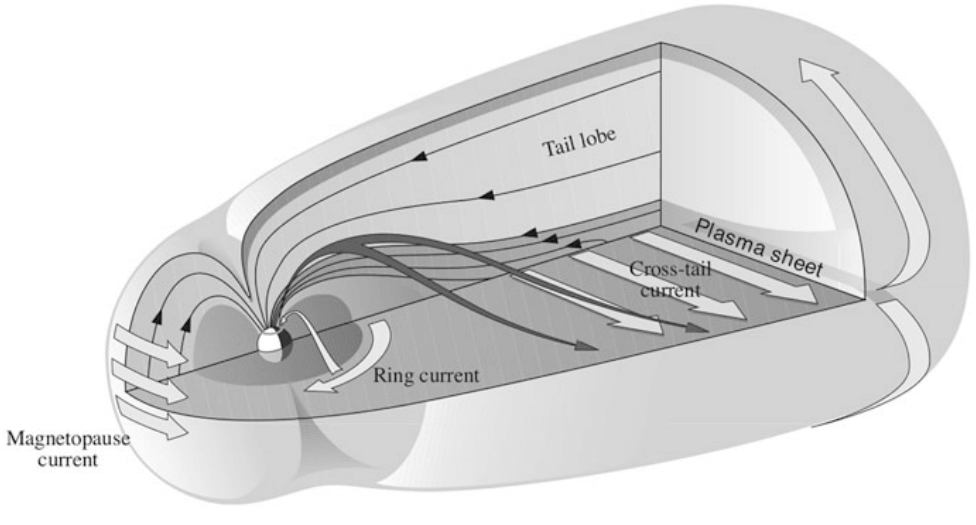
日侧磁层顶上将地球磁场与太阳风屏蔽隔开的电流系统称为 Chapman–Ferraro 电流（图 23.2）。在一级近似下，Chapman–Ferraro 电流密度 \(\mathbf{J}_\mathrm{CF}\) 可表示为 \[ \mathbf{J}_\mathrm{CF} = \frac{\mathbf{B}_\mathrm{MS}}{B_\mathrm{MS}^2}\times\nabla P_\mathrm{dyn} \tag{23.3}\] 其中 \(\mathbf{B}_\mathrm{MS}\) 是磁层磁场，\(P_\mathrm{dyn}\) 是太阳风动压。 由于地球轨道处的_行星际磁场_（IMF）只有几纳特斯拉，磁层顶电流必须将电流层外侧的磁层场屏蔽到近乎为零。因此，磁层顶紧内侧的磁场加倍：约一半来自地球偶极子，另一半来自磁层顶电流。 在等离子体物理中，这称为压力梯度引起的抗磁电流（式 8.63、式 8.65）。
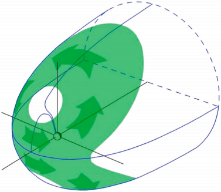
如果等离子体压力各向异性，静态系统中垂直于磁场的电流密度 \(\mathbf{J}_\perp\) 可写为 \[ \mathbf{J}_\perp = \frac{\mathbf{B}}{B^2}\times\left[ \nabla p_\perp + (p_\parallel - p_\perp)\frac{(\mathbf{B}\cdot\nabla)\mathbf{B}}{B^2} \right] \tag{23.4}\] 其中 \(p_\parallel\) 和 \(p_\perp\) 分别是平行和垂直于磁场的等离子体压力。在各向同性情况下，式 23.4 可简化为 式 23.3。
Chapman–Ferraro 模型描述了一个泪滴状的闭合磁层，日侧受压缩，夜侧被拉伸，但延伸并不很远。自 20 世纪 60 年代以来，航天器观测表明夜侧磁层，即_磁尾_，非常长，延伸到远超月球轨道的地方。这要求有一种机制将太阳风能量传递到磁层，以维持支持这种尾状构型的电流系统。
在 图 23.1 中，磁层绝大部分体积由_尾瓣_组成，它们在磁连接上与称为_电离层_的电离高层大气中的极冠相连。极冠以_极光卵_为边界。因此，北尾瓣中的磁场指向地球，南尾瓣中的磁场背离地球。为了维持尾瓣结构，尾瓣之间必须有一张电流片，其中电流从晨侧指向昏侧。这一_横贯磁尾电流_嵌在等离子体片中，绕尾瓣闭合，形成_磁层顶电流_的夜侧部分。
极区上方弱磁场的尖端状构型称为_极尖区_。它们在磁连接上并不连接磁极，而是连接正午处南北半球的极光卵，因为极光卵包围的全部磁通都连接到尾瓣。在极尖区的尾向一侧，Chapman–Ferraro 电流与磁尾磁层顶电流平滑汇合。图 23.1 还显示了向西流动的_环电流_（RC），以及将磁层电流与约 100 km 高度的极光区水平电离层电流相连接的_沿磁场电流_（FAC）。FAC 主要由电子携带。最初提出它们是为了解释极区地面测得的磁场变化。
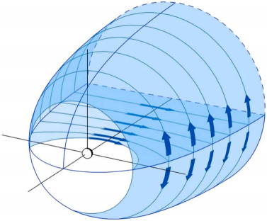
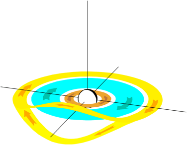
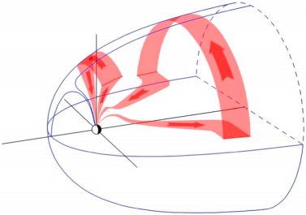
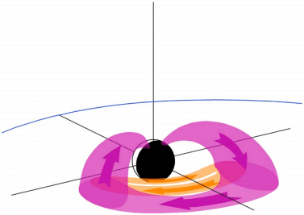
根据磁层－电离层电流连续性，沿磁场电流 \(J_\parallel\)（流入电离层时为正）与磁层中的磁场和等离子体压力的关系为（Grad, 1964；Tverskoy, 1982；Vasyliunas, 1970）（？？？） \[ J_\parallel = \frac{B_i}{B_e}\hat{b}\cdot\left( \nabla W \times \nabla P \right) \tag{23.5}\] 其中 \(W = \int \frac{\mathrm{d}s}{B}\) 是磁通管体积，\(\mathrm{d}s\) 是磁力线长度元，\(B\) 是沿磁力线的磁场，积分在两个共轭点之间进行；\(P\) 是等离子体压力，\(B_i\) 和 \(B_e\) 分别是电离层和赤道平面中的磁场。梯度在赤道平面上求值。FAC 的形成要求沿磁通管体积 W 等值面存在热等离子体压力梯度，即方位角方向的等离子体压力梯度。如果方位角梯度指向外侧，表明压力峰值不是位于午夜附近而是靠近晨侧和昏侧，就可以在等离子体片中产生一区沿磁场电流，如 图 23.5 所示。
磁层电流系统可以随时间显著变化，这使磁场的数学描述变得复杂。一种常用方法是应用 Nikolai Tsyganenko 开发的各种模型中的一些 (Tsyganenko 2013年)。1
为了说明问题，较简单的模型有时很有用。例如，Mead（1964）早期的时间无关模型在磁赤道 \((r, \phi)\) 平面上简化为 \[ B(r,\phi) = B_E\left( \frac{R_E}{r} \right)^3 \left[ 1 + \frac{b_1}{B_E}\left( \frac{r}{R_E} \right)^3 - \frac{b_2}{B_E}\left( \frac{r}{R_E} \right)^4 \cos\phi \right] \] 其中 \(B_E\) 是地球表面的赤道偶极场（约 30.4 µT = 30,400 nT），φ 是从午夜向东计量的经度。\(\cos\phi\) 项描述日侧压缩和夜侧拉伸磁场所导致的方位角不对称。系数 \(b_1\) 和 \(b_2\) 取决于磁层顶下太阳点的距离 \(R_s\)（以 \(R_E\) 为单位），而后者又取决于上游太阳风压力： \[ \begin{aligned} b_1 &= 25\left( \frac{10}{R_s} \right)^3\,\mathrm{nT} \\ b_2 &= 2.1\left( \frac{10}{R_s} \right)^4\,\mathrm{nT} \end{aligned} \]
该模型在平静和中等扰动时期、距地心 1.5–7 \(R_E\) 的范围内相当准确。
23.1.4 地磁活动指数
磁层和电离层电流系统的强度及变化传统上用地磁活动指数描述。这些指数由地面磁力仪测量结果计算。由于不同指数描述磁层电流的不同特征，它们之间没有一一对应关系。具体选择哪个指数取决于所研究的物理过程。
最广泛用于表征全球磁暴水平的指数是 Dst、Kp 和 AE。
23.1.4.1 Dst
Dst 指数旨在测量环电流的强度。它每小时计算一次，是分布于全球的四个低纬度台站测量的磁场水平分量（H）相对于平静水平偏差的加权平均。_地磁暴_定义为 Dst 指数强烈为负的时期，这表示向西的环电流增强。Dst 指数越负，磁暴越强。不存在一个公认的磁扰动下限，超过该限度才将磁层状态称为磁暴；弱磁暴的识别往往不明确。作为经验分类，我们将 Dst 为 –50 至 –100 nT 的磁暴称为中等磁暴，–100 至 –200 nT 的称为强磁暴，Dst < −200 nT 的称为大磁暴。还有一种类似的 1 分钟指数（SYM–H），由一组部分不同的六个低纬度台站数据推导，亦在使用。
除环电流外，所有电流都对 Dst 有贡献。这些电流包括磁层顶电流和横贯磁尾电流，以及电离层电流快速变化在地面感应的电流。较大的太阳风压力将磁层顶推近地球，使磁层顶电流增强，以便将局部更强的地磁场与太阳风屏蔽隔开。这一效应在日侧最强，因为那里磁层顶电流的流向与环电流相反。可以定义_压力修正 Dst_ 指数： \[ \mathrm{Dst}^\ast = \mathrm{Dst} - b\sqrt{P_\mathrm{dyn}} + c \tag{23.6}\] 其中 \(P_\mathrm{dyn}\) 是太阳风动压，b 和 c 是经验参数，其确切值取决于所用统计分析方法；例如 O’Brien 和 McPherron（2000）确定 \(b = 7.26\,\mathrm{nT}\,\mathrm{nPa}^{−1/2}\) 和 \(c = 11\,\mathrm{nT}\)。
从晨侧流向昏侧的尾电流对 Dst 指数的贡献更难估计。强活动期间，横贯磁尾电流增强并向地球靠近，使夜侧对 Dst 的贡献增强。对这一效应的估计为 Dst 的 25–50%。此外，电离层电流快速变化会在地面感应强局域电流，对 Dst 指数的贡献可达 25%。
23.1.4.2 Dessler–Parker–Sckopke 关系
Dessler–Parker–Sckopke（DPS）定理 (dessler1959?; sckopke1966?; vasyliunas2006?) 给出被地球偶极场俘获的等离子体在地球处产生的磁扰动场，因此是地磁 Dst 指数与磁层等离子体性质之间的基本联系。用现代记号表示（下述推导全程使用高斯单位），其公式为 \[ \boldsymbol{\mu}\cdot\mathbf{b}(0) = 2U_K + U_b + U_I \tag{23.7}\] 其中 \(\boldsymbol{\mu}\) 是地球磁偶极矩，\(\mathbf{b}(0)\) 是扰动（环电流）磁场，名义上在地心处求值，但对于无旋扰动场，它等于地球表面上的矢量平均值；\(U_K\)、\(U_b\) 和 \(U_I\) 分别是被俘获等离子体的总动能、扰动磁场的能量，以及电离层和引力的合并贡献。对于对称环电流，后两项很小，经典结果简化为 \[ \boldsymbol{\mu}\cdot\mathbf{b}(0) \simeq 2U_K \tag{23.8}\] 即地磁场的降低与环电流粒子的总动能成正比。下面遵循 (vasyliunas2006?) 的严格表述，从位力定理逐步推导 式 23.7。
步骤 1——等离子体的动量（位力）方程
出发点是（准中性）等离子体的动量方程，忽略电场项（因为 \(V^2\ll c^2\) 而有效），并在右侧显式写出引力： \[ \frac{\partial}{\partial t}(\rho\mathbf{V}) + \nabla\cdot\mathbf{T} = \rho\mathbf{g} + \mathbf{f} \tag{23.9}\] 其中 \(\rho\) 是质量密度，\(\mathbf{V}\) 是整体速度，\(\mathbf{g}\) 是（地球的）重力加速度，\(\mathbf{f}\) 是未包含在应力张量 \(\mathbf{T}\) 中的所有力（特别是电离层中的等离子体－中性粒子碰撞）。总应力张量为 \[ \mathbf{T} = \rho\mathbf{V}\mathbf{V} + \mathbf{P} + \mathbf{I}\left(\frac{B^2}{8\pi}\right) - \frac{\mathbf{B}\mathbf{B}}{4\pi} \tag{23.10}\] 其中 \(\mathbf{P}\) 是（标量或旋转对称的）等离子体压力，\(\mathbf{I}\) 是单位并矢，\(\mathbf{B}\) 是总磁场。也可以将 \(\rho\mathbf{g}\) 作为引力应力移入 \(\mathbf{T}\)；这一选择只改变引力能 \(U_G\) 的定义，不影响最终结果。
步骤 2——构造位力
将 式 23.9 与径向矢量 \(\mathbf{r}\)（从地心量起）点乘，在以内侧地心球面 \(S_s\)（半径 \(R_s\sim R_E\)）和外表面 \(S\)（大致为磁层顶）为边界的体积 \(V\) 上积分，并使用恒等式 \[ (\nabla\cdot\mathbf{T})\cdot\mathbf{r} = \nabla\cdot(\mathbf{T}\cdot\mathbf{r}) - \mathrm{Trace}(\mathbf{T}) \tag{23.11}\] 以及 \(\mathrm{Trace}(\mathbf{T}) = \rho V^2 + \mathrm{Trace}(\mathbf{P}) + B^2/(8\pi)\)。左侧的体积分变为 \(\mathbf{T}\cdot\mathbf{r}\) 的面积分以及动能和磁能密度项： \[ \int_V \mathrm{d}^3r\,(\nabla\cdot\mathbf{T})\cdot\mathbf{r} = \oint_{\partial V}\mathrm{d}\mathbf{S}\cdot\mathbf{T}\cdot\mathbf{r} - \int_V \mathrm{d}^3r\left[\rho V^2 + \mathrm{Trace}(\mathbf{P}) + \frac{B^2}{8\pi}\right] \tag{23.12}\] 对于 式 23.9 左侧的时间导数项，使用 \[ \rho\mathbf{V}\cdot\mathbf{r} = \nabla\cdot\!\left(\rho\mathbf{V}\frac{r^2}{2}\right) + \frac{\partial}{\partial t}\!\left(\rho\frac{r^2}{2}\right) \tag{23.13}\] （它由质量连续性得到）。对体积积分并将内球面项移到左侧后，得到磁层等离子体的位力定理： \[ -\oint_{S_s}\mathrm{d}\mathbf{S}\cdot\mathbf{T}\cdot\mathbf{r} = 2U_K + U_B + U_G - \oint_S \mathrm{d}\mathbf{S}\cdot\mathbf{T}\cdot\mathbf{r} - \oint_S \mathrm{d}\mathbf{S}\cdot\mathbf{h}\left(\frac{\partial\rho\mathbf{V}}{\partial t}\right)\frac{r^2}{2} + \int_V \mathrm{d}^3r\,\mathbf{f}\cdot\mathbf{r} \tag{23.14}\] 出现的能量为 \[ \begin{aligned} U_K &= \int_V \mathrm{d}^3r\left[\tfrac{1}{2}\rho V^2 + \mathrm{Trace}(\mathbf{P})\right] &&\text{（等离子体的动能 + 热能）} \\ U_B &= \int_V \mathrm{d}^3r\,\frac{B^2}{8\pi} &&\text{（总磁场能量）} \\ U_G &= \int_V \mathrm{d}^3r\,\rho\mathbf{g}\cdot\mathbf{r} &&\text{（引力能）} \end{aligned} \tag{23.15}\] 式 23.14 中的内边界面积分保留在左侧，因为在电离层下方的小球面 \(S_s\) 上，假设只有 \(\mathbf{T}\) 的磁场项显著；随后将把它与扰动场 \(\mathbf{b}(0)\) 联系起来。为完整起见，保留第一个时间导数面积分和 \(U_K\) 中的动能项；在准稳态下，它们很小，在标准 DPS 应用中予以舍去。
步骤 3——“持久系统”的简化
DPS 定理适用于持久的系统，即不发生快速扩散或坍缩的系统。此时惯性矩的二阶时间导数（完全展开的位力中出现的 \(\mathrm{d}^2I/\mathrm{d}t^2\) 项）可以忽略，其余各项的平衡是系统持续存在的条件。对于锚定在巨大地球上的磁层，质心运动可以忽略，因此从地心量取 \(\mathbf{r}\)，并舍去惯性时间导数项。方程 式 23.14 随之简化为 (vasyliunas2006?) 使用的形式： \[ -\oint_{S_s}\mathrm{d}\mathbf{S}\cdot\mathbf{T}\cdot\mathbf{r} = 2U_K + U_B + U_G + \int_V \mathrm{d}^3r\,\mathbf{f}\cdot\mathbf{r} \tag{23.16}\] （外表面积分已移至右侧，外边界项暂时忽略——它们将在最终公式中恢复。）
步骤 4——分离扰动场 \(\mathbf{b}\)
将总场分为（无扰动、无旋的）地球偶极场 \(\mathbf{B}_d = -\nabla\psi\) 和扰动场 \(\mathbf{b} = \mathbf{B} - \mathbf{B}_d\)。相应地写成 \(U_B = U_{B_d} + U_b\)，其中 \[ U_b = \int_V \mathrm{d}^3r\,\frac{b^2}{8\pi} \tag{23.17}\] 是仅由扰动场产生的能量。磁能之差可利用 \(\nabla\times\mathbf{B}_d=0\) 和分部积分改写为 \[ U_B - U_{B_d} = U_b - \frac{1}{4\pi}\int_V \mathrm{d}^3r\,\mathbf{b}\cdot\nabla\psi = U_b - \frac{1}{4\pi}\oint_S \mathrm{d}\mathbf{S}\cdot\psi\,\mathbf{b} + R_s^{\,3}\!\oint_{S_s}\frac{\mathrm{d}\Omega}{4\pi}\,\psi\,\mathbf{b}\cdot\hat{\mathbf{r}} \tag{23.18}\] 其中最后一项是内球面上的角平均（注意 \(\mathrm{d}S = R_s^2\mathrm{d}\Omega\) 和 \(\hat{\mathbf{r}}\cdot\mathrm{d}\mathbf{S}=R_s^2\mathrm{d}\Omega\)）。
关键的偶极恒等式为 \[ \mathbf{B}_d\cdot\mathbf{r} = 2\psi = \frac{2\,\boldsymbol{\mu}\cdot\hat{\mathbf{r}}}{r^2} \qquad\Longrightarrow\qquad -\nabla\psi - \frac{3\psi}{r}\hat{\mathbf{r}} = -\frac{\boldsymbol{\mu}}{r^3} \tag{23.19}\] 以 \(\mathbf{B}=\mathbf{B}_d+\mathbf{b}\) 计算 式 23.14 的内球面面积分并代入 式 23.19，得到 \[ -\oint_{S_s}\mathrm{d}\mathbf{S}\cdot\mathbf{T}\cdot\mathbf{r} = \frac{1}{4\pi}\oint_{S_s}\mathrm{d}\mathbf{S}\cdot\mathbf{h}\frac{B^2}{8\pi} - \frac{(\mathbf{B}\cdot\hat{\mathbf{r}})^2}{4\pi}\mathbf{i} - R_s^{\,3}\!\oint_{S_s}\frac{\mathrm{d}\Omega}{4\pi}\,\mathbf{b}\cdot\!\left[\mathbf{B} - \hat{\mathbf{r}}\!\left(2\mathbf{B}\cdot\hat{\mathbf{r}}\right) - \frac{\psi}{R_s}\hat{\mathbf{r}}\right]\!/4\pi \tag{23.20}\] 假设 \(\mathbf{B}=\mathbf{B}_d\) 是偶极场，只保留至 \(b/B_d\) 阶的项，忽略 式 23.20 的第二行，第一行随之简化；利用球内 \(\nabla^2\mathbf{b}=0\)，整个左侧变为 \[ -\oint_{S_s}\mathrm{d}\mathbf{S}\cdot\mathbf{T}\cdot\mathbf{r} \;\longrightarrow\; \frac{1}{4\pi}\oint_{S_s}\mathrm{d}\mathbf{S}\cdot\!\left[\frac{B_d^2}{8\pi} - \frac{(\mathbf{B}_d\cdot\hat{\mathbf{r}})^2}{4\pi}\right] = \boldsymbol{\mu}\cdot\mathbf{b}(0) \tag{23.21}\] 最后一个等式利用了以下事实：对于无旋扰动场，\(\mathbf{b}\) 在内球面上的角平均等于原点处的场： \[ \oint_{S_s}\frac{\mathrm{d}\Omega}{4\pi}\,\mathbf{b} = \mathbf{b}(0) \tag{23.22}\]
步骤 5——减去仅含偶极场的位力
为了单独显出扰动，取包含完整磁化等离子体的动量方程 式 23.9，减去相应的仅包含无旋偶极场 \(\mathbf{B}_d\)、不含等离子体的方程： \[ \nabla\cdot\!\left[\mathbf{I}\frac{B_d^2}{8\pi} - \frac{\mathbf{B}_d\mathbf{B}_d}{4\pi}\right] = 0 \tag{23.23}\] 在相同体积上对 式 23.23 执行相同的位力步骤，得到 式 23.14 的仅含偶极场对应式： \[ -\oint_{S_s}\mathrm{d}\mathbf{S}\cdot\mathbf{T}_d\cdot\mathbf{r} = U_{B_d} - \oint_S \mathrm{d}\mathbf{S}\cdot\mathbf{r}\left[\frac{B_d^2}{8\pi} - \frac{\mathbf{B}_d\mathbf{B}_d}{4\pi}\right]\cdot\hat{\mathbf{n}} \tag{23.24}\] 从 式 23.14（步骤 2/3）中减去 式 23.24，消去共同的内球面偶极场贡献，再使用 式 23.18 和 式 23.21，得到扰动场位力关系： \[ \boldsymbol{\mu}\cdot\mathbf{b}(0) = 2U_K + U_b + U_G + \int_V \mathrm{d}^3r\,\mathbf{f}\cdot\mathbf{r} + \text{（外表面项）} \tag{23.25}\] 外表面积分 \(\oint_S \mathrm{d}\mathbf{S}\cdot\mathbf{T}\cdot\mathbf{r}\) 已展开为各物理部分：总压力项 \(\oint_S \mathrm{d}\mathbf{S}\cdot\mathbf{r}\left[P_\perp + B^2/(8\pi)\right]\)、磁尾／磁通项 \(\oint_S \mathrm{d}\mathbf{S}\cdot[\mathbf{B}_d\times(\mathbf{r}\times\mathbf{B}_d)]/(8\pi)\)、边界法向场项和整体流项。这些是 (vasyliunas2006?) 讨论的边界贡献（磁层顶 Chapman–Ferraro 电流和横贯磁尾电流）。
步骤 6——完整 DPS 公式和环电流极限
显式恢复外边界项后，完整且经严格推导的 Dessler–Parker–Sckopke 关系为 \[ \boldsymbol{\mu}\cdot\mathbf{b}(0) = 2U_K + U_b + U_I + \text{（磁层顶 + 磁尾表面项）} \tag{23.26}\] 其中 \(U_I \equiv \int_V\!\mathrm{d}^3r\,\mathbf{f}\cdot\mathbf{r} + U_G\) 是电离层和引力的合并贡献。遵循 (vasyliunas2006?)，紧凑写为 \[ \boldsymbol{\mu}\cdot\mathbf{b}(0) = 2U_K + U_b + U_I \tag{23.27}\] 这正是开头引用的 式 23.7。引力项 \(U_G\) 始终为负，对等离子体而言只会使 \(U_K\) 减小可忽略的量；电离层项 \(U_I\) 与电离层中平衡 \(\mathbf{J}\times\mathbf{B}/c\) 的竖直机械力的全球积分成正比。(vasyliunas2006?) 表明它相对于等离子体的直接贡献很小，在大多数情况下可以忽略。
在标准的对称环电流应用中，扰动场能量 \(U_b\) 和电离层项 \(U_I\) 相对于 \(2U_K\) 都很小，因此 式 23.27 简化为经典、广泛使用的结果： \[ \boxed{\;\boldsymbol{\mu}\cdot\mathbf{b}(0) \simeq 2U_K\;} \qquad\Longleftrightarrow\qquad \boxed{\;\mathrm{Dst} \simeq -\frac{2U_K}{\mu}\,\xi\;} \tag{23.28}\] 其中 \(\xi\approx 3/2\) 是经验确定的因子，它将全球平均 \(\mathbf{b}(0)\) 转换为局部测量的赤道 Dst（考虑屏蔽电流）；符号约定为当 \(\boldsymbol{\mu}\cdot\mathbf{b}(0)>0\) 时 \(\mathrm{Dst}<0\)。因此，能量更高的环电流产生更负的 Dst——这是将 Dst 解释为环电流强度度量的定量基础。
单位说明。 上面的推导遵循 (vasyliunas2006?)，使用高斯（cgs）单位，其中磁能密度为 \(B^2/8\pi\)，偶极场为 \(\mathbf{B}_d = (3(\boldsymbol{\mu}\cdot\hat{\mathbf{r}})\hat{\mathbf{r}}-\boldsymbol{\mu})/r^3\)。在 SI 单位中，通过替换 \(B^2/8\pi\to B^2/(2\mu_0)\) 和 \(\boldsymbol{\mu}\cdot\mathbf{b}/(4\pi)\to \mu_0\,\boldsymbol{\mu}\cdot\mathbf{b}/(4\pi)\) 可得到相同结果；最终环电流关系为 \(\mathrm{Dst}\simeq -(2U_K/\mu)\,\xi\)，其中 \(\mu\) 是 SI 偶极矩（A·m²）。
23.1.4.3 Kp
另一个广泛使用的指数是行星 K 指数 Kp。每个磁台都有自己的 K 指数，Kp 是 13 个中纬度台站 K 指数的平均值。它是一个准对数幅度指数，以三分之一为级别表示：0、0+、1−、1、1+，……、8+、9−、9。Kp 基于中纬度观测，因此比 Dst 指数对高纬极光电流系统和亚暴活动更敏感。Kp 是 3 小时指数，不能反映磁层电流的快速变化。
23.1.4.4 AE
电流系统的最快变化发生在极光纬度。为描述极光电流的强度，通常使用_极光电集流指数_（AE）。标准 AE 指数由位于北半球平均极光卵下方的 11 或 12 个磁力仪台站计算。它由各站的磁北分量推导，通过确定相对于平静期背景的最大负偏差包络（称为 AL 指数）和最大正偏差包络（称为 AU 指数）得到。AE 指数本身为 \(\mathrm{AE} = \mathrm{AU} - \mathrm{AL}\)（单位均为 nT）。因此，AL 是极光卵中最强向西电流的度量，AU 是最强向东电流的度量，AE 则表征总电集流活动。AE、AU、AL 通常以 1 分钟时间分辨率给出。
由于极光电集流在约 100 km 高度流动，它们在地面产生的磁偏差远大于环电流产生的偏差。例如，典型亚暴激活期间 AE 为 200–400 nT，强磁暴期间可超过 2000 nT；而赤道 Dst 扰动只有在最强磁暴期间才超过 −200 nT。
23.2 粒子
在 1 AU 处，未受扰动太阳风的典型密度范围从快速（\(\sim 750\,\mathrm{km}\,\mathrm{s}^{-1}\)）太阳风中的约 \(3\,\mathrm{cm}^{-3}\) 到慢速（\(\sim 350\,\mathrm{km}\,\mathrm{s}^{-1}\)）太阳风中的约 \(10\,\mathrm{cm}^{-3}\)，同样存在很大偏差。
23.2.1 外磁层
外磁层可视为从约 7–8 \(R_E\) 距离处开始，那里夜侧磁场变得越来越拉伸。表 23.1 汇总了距地球约 \(X = -20\, R_E\) 的中磁尾区域的典型等离子体参数。这里 \(X\) 是沿地日连线的地心坐标，朝向太阳为正。尾瓣几乎是空的，粒子数密度量级为 0.01 \(\mathrm{cm}^{-3}\)。横贯磁尾电流嵌入其中的中央等离子体片（图 23.1）则是高温高密度等离子体区域。它周围是等离子体片边界层，其密度和温度介于中央等离子体片与尾瓣之间。边界层的磁力线连接至极光卵的极向边缘。在变化的太阳风条件下，特别是在强磁层扰动期间，实际数值与典型值有相当大的差异。
| 磁鞘 | 尾瓣 | 等离子体片边界 | 中央等离子体片 | |
|---|---|---|---|---|
| \(n(\mathrm{cm}^{-3})\) | 8 | 0.01 | 0.1 | 0.3 |
| \(T_i(\mathrm{eV})\) | 150 | 300 | 1000 | 4200 |
| \(T_e(\mathrm{eV})\) | 25 | 50 | 150 | 600 |
| \(B(\mathrm{nT})\) | 15 | 20 | 20 | 10 |
| \(\beta\) | 2.5 | 0.0003 | 0.1 | 6 |
表 23.1 还包含相同 X 坐标处磁鞘的典型参数。磁鞘由被地球弓激波压缩和加热的太阳风等离子体组成。它的密度高于、温度低于外磁层中观测到的值。表 23.1 表明，虽然所示各区域的磁场强度相当接近，等离子体 beta（动压力与磁场压力之比）是区分不同区域的有用参数。
23.2.2 内磁层
内磁层是磁场近似偶极的区域。其中存在空间上相互重叠、来源不同且能量差异很大的粒子种群：环电流、辐射带和等离子体层（章节 25）。环电流和辐射带主要由准偶极场中受俘获、由于磁场梯度和曲率效应绕地球漂移的粒子组成，而等离子体层等离子体的运动和空间范围主要受共转电场和对流电场影响。
_环电流_源于高能带电粒子绕地球的方位角漂移：正电荷粒子向西漂移，电子向东漂移。基本上所有漂移粒子都对环电流有贡献。漂移电流与粒子的能量密度成正比，主要环电流载流子是能量范围为 10–200 keV 的正离子，其通量远大于更高能辐射带粒子的通量。环电流在距地心 3–8 \(R_E\) 处流动，在约 3–4 \(R_E\) 处达到峰值。在环电流的向地边缘，负压力梯度产生局部向东的抗磁电流，但净电流仍然向西。
磁层活动期间，电离层作为环电流等离子体源的作用增强，使磁层中氧（\(\mathrm{O}^+\)）和氦（\(\mathrm{He}^+\)）离子的相对丰度增加。因此，有时环电流中相当大的一部分可由大气来源的氧离子携带。重离子含量还会改变内磁层等离子体波的性质，从而影响其与辐射带电子的波粒相互作用。
等离子体层是磁层最内部的部分，由源自电离层的低温（\(\sim 1\,\mathrm{eV}\)）高密度（\(\gtrsim 10^3\, \mathrm{cm}^{-3}\)）等离子体组成。早在航天时代之前，人们就根据闪电产生的和人工产生的甚低频（VLF）波的传播特性知道等离子体层的存在。等离子体层具有相对清晰的外边缘，称为_等离子体层顶_，其中质子密度下降数个数量级。等离子体层顶的位置和结构随磁活动变化显著（图 23.7）。磁层平静期间，密度在 4–6 \(R_E\) 距离处平滑下降；强活动期间，等离子体层顶更陡，并被推向地球。
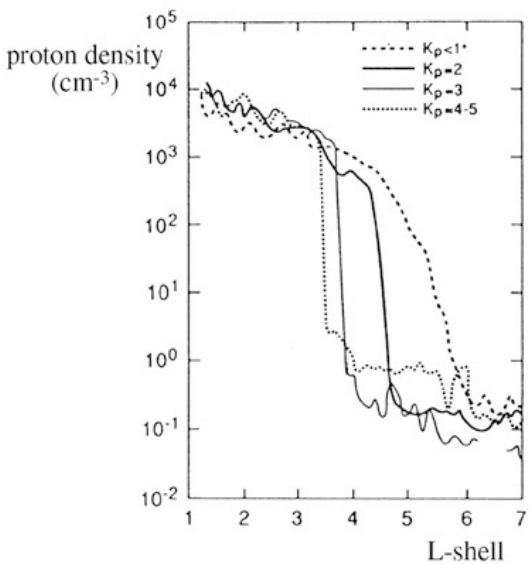
等离子体层顶的位置由等离子体片粒子向日对流与等离子体层等离子体随地球共转之间的相互作用决定。将对流电场和共转电场加入带电粒子的导引中心运动，可发现昏侧磁地方时（MLT）约 18 时处形成一个称为_等离子体层羽_的向外凸起。等离子体层羽在地磁暴和亚暴期间最常见、最显著，但平静条件下也可能存在（例如 Moldwin+ 2016）。地磁暴期间，羽流可扩展至地球同步轨道，并向更早的 MLT 弯曲。
图 25.3 显示了 IMAGE 卫星上的 EUV 仪器在 2000 年 6 月一次中等地磁暴前后取得的等离子体层全球观测。磁暴前等离子体层大致对称；磁暴后等离子体层被显著侵蚀，留下从昏侧延伸至日侧磁层顶的羽流。穿过羽流时，通常位于等离子体层顶之外的受俘获辐射带电子会遇到温度更低、密度更高的等离子体，其等离子体波环境与等离子体层本体相似。因此，等离子体层对辐射带粒子的影响超出了 图 23.7 所示的名义边界。
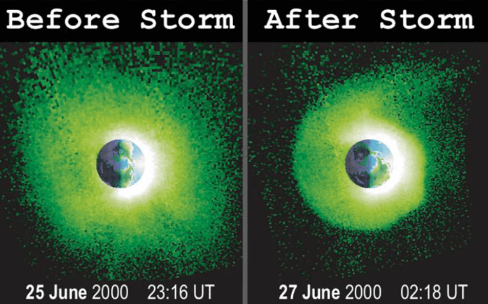
等离子体层、羽流和等离子体层顶的等离子体参数对于等离子体波的产生和传播至关重要，而这些波又与环电流和辐射带中的高能粒子相互作用。因此，内磁层最冷和最热的成分通过波粒相互作用紧密耦合。
需要认识到，环电流是磁场扰动的主要驱动源，而辐射带由于数密度低，其贡献可以忽略。
23.2.3 宇宙射线
除离子和电子辐射带外，近地空间粒子辐射的另一个重要组成部分是宇宙射线。很大一部分宇宙射线粒子的动能如此之大，以至于地磁场无法俘获它们。这些粒子穿过地球磁层，轨迹没有发生很大偏转。其中一些撞击大气，与大气原子和分子的原子核相互作用，产生可以在地面探测到的基本粒子簇射。能量最高的粒子可以一直穿透到地面。
近地空间每核子能量低于约 \(10^{15}\) eV 的宇宙射线离子谱有三个主要组成部分：
- 银河宇宙射线（GCR）的能谱峰值位于每核子 100 MeV 以上，最有可能由银河系中的超新星遗迹激波加速。
- 太阳宇宙射线（SCR）由与太阳爆发相关的日冕和行星际激波加速。其能量大多低于每核子 100 MeV，其中一部分可被内辐射带俘获。
- 反常宇宙射线（ACR）是太阳来源的离子，由日球层终止激波捕获和加速，超声速太阳风在那里于遇到星际等离子体之前变为亚声速；或者它们在日球层顶外的日球鞘中被加速。部分离子被重新注入太阳方向。近地处 ACR 能谱峰值约为每核子 10 MeV，因此粒子可被地磁场俘获。
虽然银河宇宙射线不能直接被辐射带俘获，但它们通过_宇宙射线反照中子衰变_（GRAND）机制间接影响内辐射带成分。宇宙射线轰击大气产生向各个方向运动的中子。虽然中子的平均寿命为 14 分 38 秒，在此期间多 MeV 中子要么撞击地球，要么远离磁层逃逸，但其中一小部分在仍处于内磁层时衰变为质子，并可能被内辐射带俘获。
低于约 10 GeV 时，GCR 和 ACR 通量受 11 年和 22 年太阳周期调制，因此在辐射带观测时间尺度上提供准稳定背景辐射。SCR 的到达则是与太阳耀斑和日冕物质抛射相关的瞬态现象。
宇宙射线电子也有银河和太阳成分。此外，木星磁层加速逃逸到行星际空间的高能电子。当行星际磁场连接地球与木星时，近地可以约每隔 13 个月观测到这些木星电子。
超新星激波最可能是加速 GCR 电子的来源；而在 SCR 和木星电子的加速中，除激波加速之外的其他机制也很重要，尤其是与太阳耀斑及木星磁层中的磁重联相关的感应电场。
观测到的最高能宇宙射线的加速过程及其身份仍是谜，其能量可达约 \(3\times 10^{20}\) eV。除非质子在离观测点不太远的地方被加速，否则不应能观测到能量高于 \(6\times 10^{19}\) eV 的质子，这称为 Greisen–Zatsepin–Kuzmin 截止。超过该截止值时，质子与蓝移的宇宙微波背景相互作用产生介子，带走多余能量。最高能粒子可能是较重元素的原子核。这暂时仍是一个开放问题。
23.3 磁层动力学
强太阳风驱动在磁层中产生_磁暴_和更为间歇性的_亚暴_。它们主要由各种大尺度日球层结构引起，例如_日冕物质抛射_的行星际对应物（CME/ICME）2、慢速和快速太阳风流的流相互作用区（SIR），以及具有阿尔芬型涨落的快速太阳风。ICME 前方常有行星际快前向激波及激波与抛射物之间的湍流_鞘区_，它们都会在磁层中产生各自不同的响应。由于快速太阳风流源自可持续多个太阳自转周期的日冕洞，慢速和快速流的分布以 27 天间隔重复，SIR 因此常被称为_共转相互作用区_（CIR）。不过，流相互作用区是更能描述物理过程的术语。SIR 可能逐渐演化为由激波界定的区域，但在地球轨道向日侧很少观测到充分发展的 SIR 激波。这些大尺度日球层结构在地球轨道附近的持续时间从数小时到数天不等。平均而言，鞘区经过地球需要 8–9 小时，ICME 或 SIR 经过约需 1 天。快速流通常影响地球环境数天。
23.3.1 磁层对流
磁层等离子体持续进行大尺度平流运动，在此语境中稍不准确地称为_磁层对流_。对流最直接地在极区电离层中观测到：等离子体从日侧穿过极冠流向夜侧，再经晨侧和傍晚扇区的极光区返回日侧。 无电阻的_理想磁流体动力学_（MHD）对有电阻电离层上方的大尺度等离子体运动给出相当准确的描述。在理想 MHD 中，磁力线是电势等值线，电场 \(\mathbf{E}\) 和等离子体速度 \(\mathbf{V}\) 通过简单关系相联系： \[ \mathbf{E} = -\mathbf{V}\times\mathbf{B} \]
因此，电离层中可观测到的对流运动，或者电势，可以沿磁力线映射到尾瓣和等离子体片中的等离子体运动。由于磁尾等离子体片中的电场从晨侧指向昏侧，磁场指向北方，对流将等离子体粒子从夜侧等离子体片带向地球，其中一部分成为环电流载流子，并形成辐射带的源粒子群。
在理想 MHD 中，通常说等离子体和磁力线相互冻结。这意味着由一条磁力线连接的两个等离子体元，在等离子体从一处流到另一处时仍保持连接。用移动的磁力线说明运动很方便，尽管磁力线不是物理实体，其运动只是方便的比喻。更符合物理的描述是磁场在空间和时间上演化，使等离子体元保持磁连接。
对流由太阳风输入磁层的能量维持。当行星际磁场（IMF）指向北方时，输入最弱但仍有限；IMF 南向时输入增强。如果磁层顶完全闭合，等离子体将在磁层内部循环，使从日侧穿过极冠到夜侧的磁通管到达磁层外边界；在那里，需要与背日太阳风流发生某种_黏性相互作用_以维持循环。磁层顶上的经典（碰撞）黏性小到可以忽略，但有限回旋半径效应和波粒相互作用会产生一定程度的_反常黏性_3。估计它提供了太阳风向磁层动量传递的约 10%。
然而，磁层并非完全闭合。Axford 和 Hines 提出黏性相互作用模型的同一年，Dungey（1961）用磁重联解释了对流。_Dungey 循环_始于日侧磁层顶电流片处冻结条件的破坏。太阳风中的一条磁力线被切断并与一条地球磁力线重联。方向相反的磁场重联效率最高，IMF 南向时日侧赤道平面就是这种情况；但在其他方向下重联仍不为零。日侧重联之后，太阳风流将新连接的磁力线拖向夜侧，位于磁层内部的那部分磁力线成为尾瓣磁力线。因此，越来越多磁通在尾瓣中堆积。在磁尾深处某个距离，南北尾瓣方向相反的磁力线再次跨横贯磁尾电流层重联。此时，磁力线的电离层端已到达地方午夜附近的极光卵。接着，来自磁尾重联点的向地流出将新闭合的磁力线拖向地球。返回流无法穿入随地球共转的等离子体层，因此对流必须经晨侧和昏侧绕地球返回日侧。在电离层中，流动沿晨侧和昏侧极光卵返回日侧。接近日侧磁层顶后，磁层等离子体为磁层顶内侧的日侧重联提供流入。注意，有电阻的电离层破坏了理想 MHD 的冻结条件，因此在大气中使用移动磁力线的图像并不合理。
IMF 南向期间，尾瓣磁通增加和磁层内部等离子体对流增强都有坚实的观测基础。计算入射磁层顶的运动诱导太阳风电场的东西分量（\(E = V\, B_\mathrm{south}\)），并估计磁层上的相应电势降，可估计约 10% 的太阳风电场作为晨昏向对流电场“穿透”到磁层中。注意，\(\mathbf{E} = -\mathbf{V}\times\mathbf{B}\) 并非因果关系，不能表明是电场驱动磁层对流，还是对流产生运动诱导电场。循环的最终驱动是太阳风对磁层的作用。
等离子体循环并不像上述讨论可能暗示的那样平滑。如果日侧磁层顶和夜侧电流片的重联率互相平衡，确实可以出现稳态对流。然而这种情况很少，因为驱动太阳风及磁层响应的变化快于数小时的磁层循环时间尺度。重联可能显著侵蚀日侧磁层磁场，使磁层顶比简单压力平衡所预示的更靠近地球。尾瓣中变化的磁通引起极冠扩张和收缩，影响极光卵的大小与形状。
此外，研究发现等离子体片中的对流由间歇性的高速_爆发性整体流_（BBF）组成，其间等离子体几乎停滞 (Angelopoulos 等 1992年)。值得注意的是，虽然 BBF 在极光高活动期间更频繁，但极光平静期间也会出现。估计 BBF 是其被观测到的区域中向地质量和能量输运的主要机制。因此，在电离层观测到的高纬对流对应于外磁层中 BBF 与较慢背景流的平均。
23.3.2 地磁暴
如 图 23.9 所示，磁暴期间辐射带演化最为剧烈。磁暴常常但并非总是以地面测量的磁场水平分量（H）显著正偏离开始（图 23.10），这称为_磁暴突然开始_（SSC）。SSC 是 ICME 驱动的激波及相关压力脉冲到达地球磁层顶的标志。与 SIR 或速度不足以在太阳风中驱动激波、但仍扰动并堆积前方太阳风的 ICME 相关的压力脉冲期间，也会观测到 SSC。如果太阳风参数已知，可以按照 式 23.6 从 Dst 指数中去除压力效应。
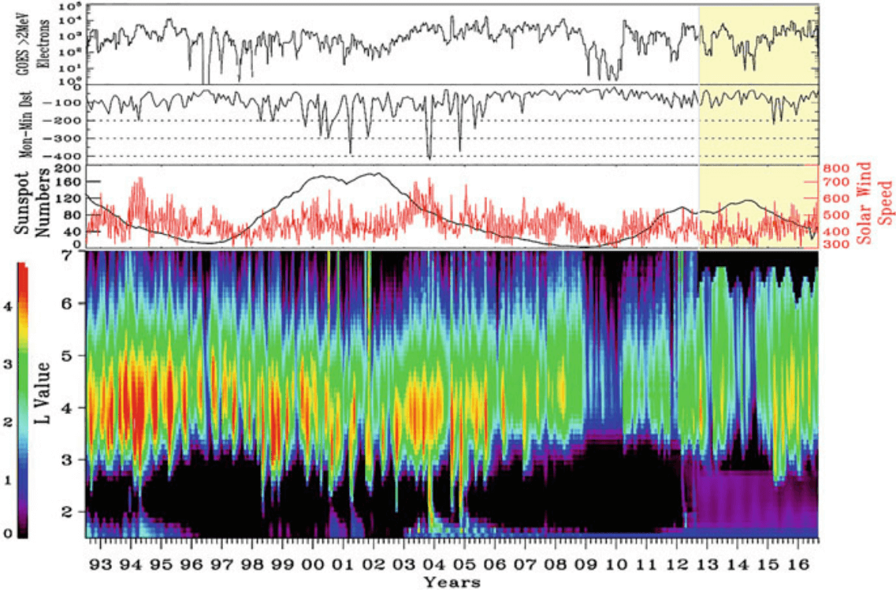
磁层中的磁暴也可以由没有明显压力脉冲的低速 ICME 和 SIR 驱动。如果场涨落中有足够长时间、足够强的南向磁场，能够维持全球对流电场并增强环电流，就会发生 SIR 驱动的磁暴。因此，有些磁暴在 Dst 指数中没有清晰的 SSC 特征。另一方面，激波撞击磁层顶之后并不总有地磁暴，特别是当后续太阳风结构中的 IMF 主要指向北方时。在这种情况下，磁力图中的正偏离称为_突然冲量_（SI），之后 Dst 指数回到接近背景水平，只存在较小的时间变化。如果动压仍维持在增强水平，Dst 可在一段时间内保持正偏离。
SSC 之后进入磁暴初始相，其特征是 Dst 的正偏离，通常为几十 nT。初始相由以北向 IMF 为主和高动压共同造成。取决于太阳风驱动的类型和结构，这一阶段的持续时间可能差异很大。如果磁暴由南向磁场的 ICME 驱动，且其前方紧接着以南向磁场为主的鞘区，初始相可能非常短。此时，一旦输入磁层的能量足够强，磁暴主相便开始，其特征是赤道磁场 H 分量快速下降。如果鞘区中 IMF 主要向北，主相要等到抛射物中的南向磁场增强日侧磁层顶重联才会开始。
如果鞘区和 ICME 中都没有南向 IMF，则预期不会发生常规全球磁暴。然而，后随北向 IMF 的压力脉冲／激波仍可对辐射带环境产生重大影响，因为它们可以强烈摇动和压缩磁层，并触发一系列亚暴（小节 23.3.3）。
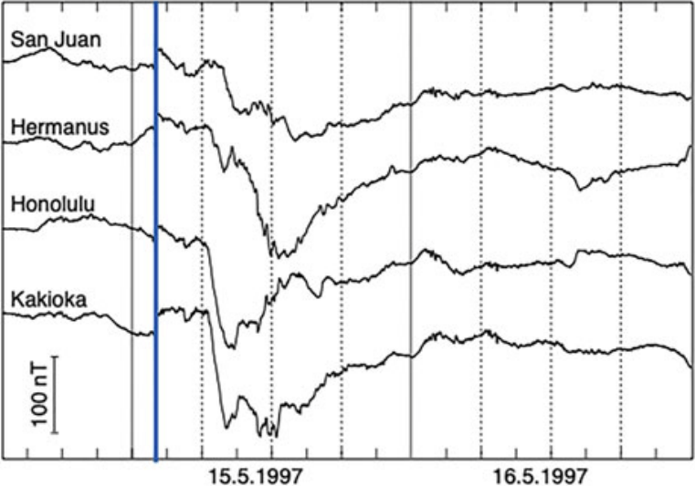
磁暴主相期间，随着增强的磁层对流将越来越多的带电粒子从磁尾输运到环电流区域，太阳风能量输入增强使内磁层环电流载流子增能且数量增加。下文讨论的亚暴在此有重要贡献，因为它们从近地磁尾注入新粒子。环电流增强通常是不对称的，因为并非所有载流离子都处于闭合漂移轨道，相当一部分从地球傍晚侧经过并继续向日侧磁层顶运动。图 23.10 显示了这一点：当檀香山和柿冈磁力仪位于地球昏侧时，它们显示出最陡的主相变化。
当太阳风能量输入停止时，高能环电流离子的损失快于从磁尾补充新离子的速度。Dst 指数开始返回背景水平。这一阶段称为_恢复相_，通常比主相长得多，因为环电流载流子的主要损失过程——与地球外逸层低能中性原子的电荷交换、波粒相互作用和库仑碰撞——比主相期间电流的快速增长缓慢。由于 ICME 通常持续 1 天，后随慢速风的 ICME 所驱动的磁暴往往具有相对较短的恢复相；而 SIR 及后随快速流的 ICME 所驱动的磁暴，其恢复相可能长得多。这是因为快速流中的阿尔芬型涨落，即大振幅 MHD 阿尔芬波，与磁层边界相互作用会触发向内磁层注入粒子的亚暴。这可以使环电流不断获得新粒子，持续一周或更长时间。环电流的演化也可能更加复杂，常导致 Dst 多步增强，或者在间隔较近的增强事件之间 Dst 未恢复到平静期水平。这通常发生在鞘区和 ICME 抛射物都携带南向磁场，或地球受到多个相互作用的 ICME 冲击时。
23.3.3 亚暴
_磁层亚暴_是磁尾内部太阳风能量的瞬态储存和释放过程。它可以将几十至几百 keV 能量范围的新粒子从磁尾等离子体片注入内磁层。注入准偶极磁层后，带电粒子开始绕地球漂移，成为环电流和辐射带粒子群的一部分。这种注入具有双重作用：它提供可被加速到高能的粒子；同时，注入的电子和质子驱动波动，既可使辐射带电子和环电流载流子加速，也可导致它们损失。
磁层亚暴源于对流增强期间近地至中磁尾区域的尾瓣磁通堆积。经过半个多世纪研究，亚暴循环的细节仍有争议。观测明确表明，亚暴包含磁层全球构型变化：磁通堆积期间近地夜侧磁场拉伸及相关等离子体片变薄（亚暴_生长相_），随后近地磁场相对快速地恢复为较偶极的形状（膨胀相），然后较缓慢地返回平静期的拉伸构型，并伴随等离子体片变厚（恢复相）。一个亚暴循环通常持续 2–3 小时。最强活动发生在膨胀相开始后：近地磁尾的横贯磁尾电流中断，并通过沿磁场电流与极区电离层电流耦合，形成所谓的_亚暴电流楔_。这导致磁层粒子强烈沉降，产生最引人入胜的极光景象。地磁暴期间亚暴循环可能不那么清晰。例如，新的生长相可能在前一次膨胀相后不久开始，随后又开始下一次膨胀。
对亚暴循环的一种广泛使用但并非唯一的描述是所谓的_近地中性线_模型（NENL 模型，综述见 Baker 等 (1996年)）。在该模型中，一旦足够的磁通在磁尾堆积，新的磁重联中性线便使电流片夹断。新中性线形成于距地球 8–30 \(R_E\) 的某处，比 Dungey 循环的远磁尾中性线近得多。在中性线的向地一侧，等离子体被迅速推向地球；在尾向一侧，等离子体向尾部流动，并与远磁尾中性线共同形成一个称为_等离子体团_的向尾运动结构。有时反复发生的亚暴开始会产生一串等离子体团。尽管常用正午－午夜子午面上的二维示意图说明等离子体团形成，磁尾中亚暴过程的三维演化要复杂得多。实际上，等离子体团是磁通绳，其二维截面看起来像围绕磁零点的闭合磁力线环。
如 小节 23.3.2 所指出，中央等离子体片中的等离子体流并不十分平滑，相当一部分能量和质量以爆发性整体流（BBF）形式输运。BBF 被认为与等离子体片中的局域重联事件相关，其距地距离大致与 NENL 模型的重联线相同。它们产生称为_偶极化磁通束_（DFB）的小磁通管。这个名称源于其增强的北向磁场分量 \(B_z\)，相较于更拉伸的构型，它对应于更接近偶极场的地磁状态。在流体图像中，DFB 形成后由于磁曲率张力产生的力而向地球涌动。它们前方是称为_偶极化锋面_的 \(B_z\) 急剧增强。DFB 还与高达数 \(\mathrm{mV}\,\mathrm{m}^{-1}\) 的强方位角电场相关，能够将带电粒子加速至高能。爆发性整体流的制动以及靠近地球处偶极化锋面的合并是否导致亚暴电流楔形成，仍有争议。
一种常见观测对 NENL 模型提出了挑战：极光亚暴激活从最靠赤道的极光弧开始，此后向极地方向扩展。另一个提出的模型是基于等离子体不稳定性的_电流中断_（CD）模型。在 CD 模型中，三维等离子体不稳定性首先在近地区域、拉伸磁尾与偶极型内磁层之间的过渡区增长。这一不稳定性驱动逐渐变陡的波；由于强烈振荡的几何构型无法维持尾电流，因而导致电流中断。电流中断随后激发向磁尾传播的波，之后触发重联、等离子体团和快速流。理解这两个模型的简单方法是：NENL 是“由外向内”，CD 是“由内向外”。虽然电流中断与重联释放等离子体的位置相距约 100,000 km，但两者都在几分钟内发生，因此很难揭示电流中断和等离子体团抛射发生的原因和方式。
暂且不论竞争性解释之间的争论，关键是亚暴膨胀使生长相期间被拉伸的尾部磁场构型偶极化，并向内磁层注入新粒子。粒子注入可表现为_无色散_，即不同能量的注入粒子同时到达观测航天器；也可表现为_有色散_，即较高能量的粒子先于较低能量粒子到达。由于色散来自粒子能量相关的梯度和曲率漂移，无色散注入表明加速发生在相对靠近观测航天器的位置；而有色散的到达表明加速发生在离观测点更远的地方，粒子分布已有时间因能量相关漂移而形成色散。
无色散亚暴注入通常在地球同步轨道（6.6 \(R_E\)）及更远处的午夜扇区附近观测到，但也曾在低至约 4 \(R_E\) 处发现 (Friedel 等 1996年)。随着亚暴发展，注入位置向地球移动，也受地磁活动控制，尽管无色散区域在地方时和径向上的范围都尚不明确。注入粒子的加速细节也尚未完全确定。有人提出，它与向地移动的偶极化锋面相关的磁感应加速和费米加速均有关。偶极化锋面对辐射带的另一个重要影响是它们在近地处制动，可激发与辐射带电子有效相互作用的磁声波。
23.4 超低频波
超低频（ULF）波指频率范围为 [0.001, 10] Hz 的波。这个名称并未说明它们的物理起源，只描述观测事实。在地球磁层中，该频率范围与 MHD 波大部分重叠。因此，早期空间物理先驱依靠大时空尺度的 MHD 理论解释这些波背后的物理，尽管其中存在一些偏差和不足，需要弗拉索夫描述等更精细的模型。ULF 波遍布近地等离子体环境，在其动力学中发挥重要作用，例如将能量从太阳风传递至磁层，或加速地球辐射带中的电子。
ULF 波最初称为微脉动或磁脉动，因为它们最先被地面磁力仪观测到。ULF 脉动分为两类：连续脉动（Pc）和不规则脉动（Pi），再按频率和持续时间分为若干子类（Pc1–5 和 Pi1–2）。这种划分基于其物理和形态性质，边界并不严格。
| 符号 | 周期范围 [s] | 特征 |
|---|---|---|
| Pc1 | 0.2 - 5 | EMIC |
| Pc2 | 5 - 10 | EMIC、镜模 |
| Pc3 | 10 - 45 | 前激波区、FLR、镜模 |
| Pc4 | 45 - 150 | FLR |
| Pc5 | 150 - 600 | SW、FLR |
| Pi1 | 1 - 40 | |
| Pi2 | 40 - 150 |
按偏振分类，磁力线共振 ULF 波可分为三种模式：压缩模（\(\Delta B_\parallel,\, \Delta E_\phi\)）4、极向模（\(\Delta B_r,\, \Delta E_\phi\)）和环向模（\(\Delta B_\phi,\, \Delta E_r\)）。这里，\(B_r\)（\(E_r\)）、\(B_\parallel\) 和 \(B_\phi\)（\(E_\phi\)）分别是局部磁场坐标系中的径向、平行（或压缩）和方位角分量。根据基本 MHD 理论，压缩模是快模，而极向模和环向模是阿尔芬模。扰动电磁场满足 \(\mathbf{B}_1 = \frac{\mathbf{k}}{\omega} \times \mathbf{E}_1\)。考虑磁层内靠近赤道面的一条闭合磁力线：如果波矢 \(\mathbf{k}\) 沿磁力线，即 \(\mathbf{k} = (0,0,k_z)\)，电磁场有两种情况：极向模中 \(\mathbf{E}_1\) 沿 \(\hat{\phi}\)、\(\mathbf{B}_1\) 沿 \(\hat{r}\)；环向模中 \(\mathbf{E}_1\) 沿 \(\hat{r}\)、\(\mathbf{B}_1\) 沿 \(\hat{\phi}\)。如果波矢 \(\mathbf{k}\) 垂直于磁力线，即 \(\mathbf{k} = (k_x, 0, 0)\)，由于 MHD 中没有 \(E_\parallel\)，只有一种选择：\(\mathbf{E}_1\) 沿 \(\hat{\phi}\)，\(\mathbf{B}_1\) 沿 \(\hat{z}\)。允许存在相位差；实际上在真实观测中（例如 THEMIS），很少发现 B 和 E 同相变化。这些分类汇总于 表 17.1。
23.4.1 Pc1 与 Pc2
- 通常在正午至午后的 MLT 扇区观测到，特别容易在太阳风等离子体压力突然变化产生的突然冲量（SI）之后探测到。
- 太阳风压力增加使磁层突然压缩，导致高纬正午附近平静磁层等离子体的形变最大。穿过这些受扰等离子体的磁力线上最有可能观测到 ULF 发射。
- 相反，正如 Hirasawa（1981）提出的，磁层突然稀疏化预计会降低等离子体的各向异性和 \(\beta\)，从而抑制 ULF 波增长。（有意思，以后应该查一下！）
- SI 发生与 ULF 发射开始之间延迟 1–3 分钟（地面磁力仪）[^growth_rate]。
- 驱动受俘获的质子辐射，显著增强沿 B 场方向的 eV 能量范围质子，并由于磁感应加速使 keV 范围的质子增能 (Arnoldy 等 2005年)。
在地球，电磁离子回旋（EMIC）波通常在 Pc1 和 Pc2 范围内观测到。在外辐射带，其频率通常为 0.1–5 Hz。EMIC 波优先发生在等离子体层顶和等离子体层羽附近的午后磁地方时（MLT）扇区，约为 12:00 至 18:00 MLT。
EMIC 波通常由高温（\(\sim 1-100\,\mathrm{keV}\)）离子的温度各向异性（\(T_\perp > T_\parallel\)）分布激发。它们优先在高温各向异性离子和冷稠密等离子体粒子群空间重叠的区域产生（图 23.11）。
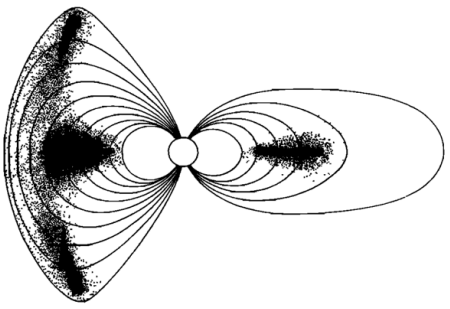
激发的 EMIC 波可使磁层粒子增能和损失。通过共振波粒相互作用，EMIC 波能够沿垂直于环境磁场的方向将冷离子加速至热能（\(\sim 1\,\mathrm{eV} - 1\,\mathrm{keV}\)）范围，并导致环电流中热离子的俯仰角散射损失。特别是，EMIC 波还可以与相对论电子共振相互作用，导致电子俯仰角散射。
新激发的 EMIC 波通常是横向左旋偏振，与离子在磁场中的回旋方向一致（这并不意外）。产生后，EMIC 波可以沿磁力线导引，从源区传播到其他磁纬度。航天器测量表明，在大于约 \(11^\circ\) 的纬度，EMIC 波几乎都远离赤道传播，在电离层处反射极少。
一些波在向更高纬度传播过程中，当波频率 \(f\) 等于交叉频率 \(f_{co}\) 时甚至可能发生偏振反转，然后在更高纬度处、\(f\) 等于双离子混合频率 \(f_{bi}\) 时被反射。因此，其偏振从左旋转变为右旋或线偏振模式。这些波可以沿磁通管多次穿越赤道，而没有大的径向或方位角漂移。由于连续经过赤道波增长区，预计波会通过持续从高能质子获取能量而大幅增强。然而，Horne 和 Thorne 认为，在没有密度梯度时，显著的波增强只能发生在第一次穿越赤道时，因为初次穿越后波法线角变大；热重离子对波的阻尼也使同一个 EMIC 波包不可能多次弹回并穿过其源区。
镜像不稳定性与离子回旋不稳定性
早在 20 世纪 70 年代，早期观测就表明磁鞘中存在时间尺度从 1 秒到几十秒的强磁场涨落。后来主要基于 ISEE 和 AMPTE 卫星数据的研究表明，镜模波（小节 15.2）和动理学阿尔芬离子回旋（AIC）波（即 EMIC 波）占磁鞘 ULF 波的绝大多数：
- AIC/EMIC 主要在弓激波附近和等离子体耗尽层5中发现 (Song 等 1994年; Hubert 等 1998年)。
- 镜模波在磁鞘中央和下游占主导，但也可紧邻准垂直激波的下游出现。(Hubert 等 1989年)
- ULF 波通常在日侧磁鞘中更强。
- 准平行激波期间 EMIC 波出现更频繁。
产生 AIC 波的离子回旋不稳定性常在与镜像不稳定性相同的条件下增长，在线性近似中应在较低 \(\beta\) 的等离子体中占主导；另一方面，镜像不稳定性应在离子 \(\beta\) 高的等离子体中占主导 (Lacombe 和 Belmont 1995年)。自从首次确认地球磁鞘中存在镜模以来，日球层各处都观测到了镜模。空间等离子体中长期存在的谜题是：即使在低 \(\beta\) 等离子体中，镜模也常常是占主导的相干磁结构。
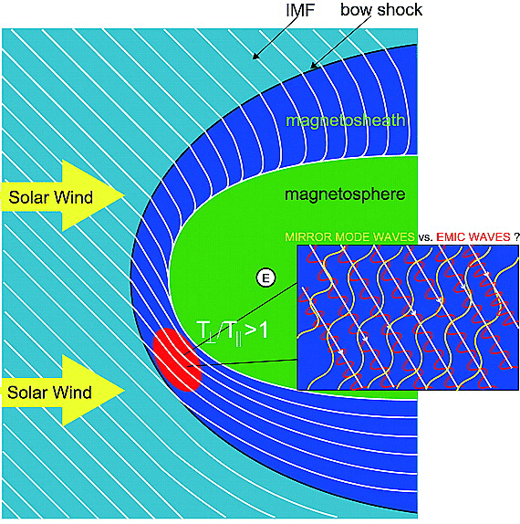
人们尝试寻找这一谜题的答案。20 世纪 80 年代末和 90 年代初的一系列研究（例如 [Gary+]）认为，\(\text{He}^{++}\) 的存在倾向于提高 EMIC 阈值，而镜模增长受 \(\text{He}^{++}\) 离子存在的影响较小。Yoshiharu Omura 和他的学生 Shoji 在 2009 年通过混合 PIC 模拟提出另一种可能性：尽管 EMIC 模式具有更高的线性增长率，但它们比镜模更早饱和，尤其是在较高维度中（通过比较二维和三维结果），因此镜模波能够从温度各向异性获得更多自由能。
23.4.2 Pc3 与 Pc4
如上所述，人们最初提出 ULF 波 Pc 分类时，许多背后的物理过程仍不清楚。这些边界根据当时的观测数据选定，不一定具有物理意义。
周期为 10–45 秒的 Pc3 范围 ULF 波是日侧磁层的常见现象，经常被航天器和地面观测站观测到。它们被认为起源于地球准平行弓激波上游延伸的离子前激波区（IMF 与激波法线之间的夹角 \(\theta_{Bn}\le 45^\circ\)）。在那里，激波反射的超热离子与入射太阳风相互作用，通过_离子束不稳定性_产生 Pc3 频率范围的 ULF 波。
对于与前激波区相关的 Pc3/4 波，图景如下。前激波区波产生后，穿过磁鞘传播（相关观测极少）并到达磁层顶。它们进入日侧磁层顶，以压缩型 Pc3 涨落的形式向背日方向传播进入磁层，将波能量向夜侧输运。在内磁层中，当其频率与地球磁力线的本征模匹配时，可能耦合到阿尔芬型磁力线共振（FLR）。低纬观测到 Pc3 FLR，中纬观测到 Pc4 FLR [Yumoto+, 1985]。压缩模振幅向磁层内部传播时衰减，但有时可以一直观测到午夜扇区。与透射前激波区波相关的压缩型 Pc3 波功率限制在赤道附近。统计研究还表明，在不同地磁活动水平下，赤道 Pc3 波功率在午前或正午扇区更强，这与帕克螺旋 IMF 方向下前激波区向晨侧翼弓激波上游延伸的情况一致。然而，与 Pc5 脉动（150–600 秒）不同，Pc3 波活动与地磁扰动水平_没有_明显相关性。
还要注意，并非所有 Pc3 波都与前激波区波相关，因此关于 Pc3 波分布的不同调查可能得到不同结果。这表明我们距离理解波产生的完整物理机制还很远。
Pc3–4 ULF 波可能通过若干机制传播至高纬度：
- Pc5 基模共振的谐波。预计这些谐波具有与 FLR 相同形式的振幅和相位特征，并与基模同时出现。
- 腔模（章节 17）。
- 快模波不经模式转换，直接穿过磁层传播至电离层。这些波在穿过磁层时发生折射和衍射，可能通过费马原理被导向高纬度（？？？）。
- 调用沉降_电子_束的晶体管模型 [Engebretson+ 1991]（？？？）。该模型不需要波模耦合或波跨磁力线传播，而是依靠电子对磁鞘压力涨落作出响应而产生调制沉降。后者归因于上游离子回旋共振机制。调制电子束将波信息从包含受俘获电子母体粒子群的外磁层区域传送到极尖区附近的电离层。由此产生的周期性沉降将调制电离层电导率，进而调制极尖区赤道侧的电离层电流。头顶磁力线随后可被极尖区赤道侧这些调制电流激发，其频率与调制电子相同。Engebretson 将这种行为比作晶体管，其中小基极电流调制从集电极到发射极的较大电流。这些 ULF 波的特点是外观类似噪声，相干长度较短。
23.4.3 Pc5
地面、电离层和空间观测表明，磁层 Pc5 范围内存在仅一个或至少少数几个共振磁力线振动（即本征振荡）。由于阿尔芬速度沿径向变化，且大多数磁层流体磁波源是宽带源，无限多条地磁力线都可以满足共振条件。因此，对于足够宽的能量源，每条磁力线都应处于共振。于是，观测到“神奇”频率的事实要求磁层存在频率选择规则。(Kivelson 和 Southwood 1985年) 提出，例如磁层顶处宽带源导致的扰动首先耦合到全球压缩本征模的离散本征振荡。这些窄带压缩模随后通过磁力线共振机制耦合到阿尔芬型扰动。全球模式因此选择参与共振耦合的频率分量。另一种选择方式由 [Fujita+, 1996] 提出：他们表明，非均匀磁层等离子体表面的 K-H 不稳定性使不稳定波具有色散性质，进而产生更窄的源频谱。因此，章节 17 所概述的磁力线共振概念能够解释地球磁层中观测到的共振 ULF 脉动的主要特征。
23.4.4 能量损失机制
根据 (Southwood 和 Hughes 1983年)，ULF 波能量可能的损失至少包括三种机制：
- 通过电离层焦耳加热发生阻尼；
- 广义朗道阻尼；
- 模式耦合。
通过比较朗道阻尼、焦耳加热和波导传播的效应，后来的研究者从个例研究发现，焦耳加热和磁层波导传播不足以解释观测到的 ULF 波能量衰减率；波由于与高能离子发生漂移－弹跳共振而产生的朗道阻尼可能更强，且存在 \(O^+\) 等重离子时更有效。
23.4.5 与高能粒子的相互作用
23.4.5.1 共振
(Southwood 和 Kivelson 1981年, 1981年) 建立了广泛使用的 ULF 横波调制高能粒子理论。在该理论中，粒子在漂移－弹跳运动期间感受到波携带的电场，其能量随之改变。高能粒子的漂移－弹跳共振由下式确定： \[ \Omega - m\omega_d = N\omega_b \tag{23.29}\] 其中 \(N\) 是整数（通常为 \(\pm 1, \pm 2\) 或 \(0\)），\(m\) 表示 ULF 波的方位角模数，\(\Omega,\omega_d\) 和 \(\omega_b\) 分别是波频率、粒子漂移频率和弹跳频率。\(N=0\) 称为漂移共振，而 \(N\neq 1\) 是漂移－弹跳共振。由于 \(\omega_d\) 和 \(\omega_b\) 对能量的依赖已知，如果波的性质（\(\Omega\) 和 \(m\)）已知，就可以计算共振能量。MMS 和 Cluster 的观测可见 Zong 等 (2017年) 的综述论文。
对于在 ULF 波中发生漂移运动、电荷为 \(q\) 的粒子，动能 \(W\) 按以下速率变化： \[ \frac{\mathrm{d}W_\mathrm{A}}{\mathrm{d}t} = q \mathbf{E}\cdot\mathbf{v}_\mathrm{d} \tag{23.30}\] 其中下标 \(\mathrm{A}\) 表示对多个回旋周期求平均，\(\mathbf{E}\) 是与波相关的电场，\(\mathbf{v}_\mathrm{d}\) 是磁梯度和曲率漂移速度。对于地球磁偶极场中在赤道处镜像反射的粒子（曲率漂移为零），在非相对论极限下，漂移速度 \(\mathbf{v}_\mathrm{d}\) 可近似为 \[ \mathbf{v}_\mathrm{d} = -\frac{3L^2 W}{q B_\mathrm{E}R_\mathrm{E}}\hat{e}_\phi \tag{23.31}\] 其中 \(\hat{e}_\phi\) 定义为向东，\(R_\mathrm{E}\) 是地球半径，\(L\) 是 L 壳层参数（磁力线与赤道交点的径向距离，以 \(R_\mathrm{E}\) 为单位），\(B_\mathrm{E}\) 是地球表面的赤道磁场。ULF 波沿方位角方向传播，相关电场为 \[ \mathbf{E} = E_\phi \exp\,i(m\phi-\omega t)\hat{e}_\phi \tag{23.32}\] 其中 \(\phi\) 是磁经度（向东增大），\(m\) 是方位角波数，\(\omega\) 是波角频率。由（式 23.30、式 23.31、式 23.32），粒子能量的平均变化率由下式给出： \[ \frac{\mathrm{d}W_\mathrm{A}}{\mathrm{d}t} = -\frac{3L^2 W}{B_\mathrm{E}R_\mathrm{E}}\cdot E_\phi \exp\,i(m\phi-\omega t) \tag{23.33}\] 应沿粒子漂移轨道向过去积分至 \(t=-\infty\)，以得到粒子从波获得的能量 \(\delta W_\mathrm{A}\)。这里假设粒子的漂移轨道不受扰动（尽管粒子因波而发生能量变化），角漂移频率 \(\omega_\mathrm{d}\) 为 \[ \omega_\mathrm{d} = \frac{\mathrm{d}\phi}{\mathrm{d}t} = -\frac{3L^2 W}{B_\mathrm{E}R_\mathrm{E}^2} \tag{23.34}\]
假设正弦波振幅保持不变，沿粒子的漂移轨道 式 23.34 对 式 23.33 向过去积分，结果将依赖于初始条件。为绕开这一问题，Southwood 和 Kivelson (1981年) 假设波角频率 \(\omega\) 为复数，其小的正虚部 \(\Im(\omega)\) 表示逐渐增长的波信号。该假设使粒子在有限相互作用时间内感受到正弦波，积分 式 23.33 得到平均粒子能量增益（？？？） \[ \delta W_\mathrm{A} = -i\cdot\frac{3L^2 W}{B_\mathrm{E}R_\mathrm{E}}\frac{E_\phi\exp\,i(m\phi-\omega t)}{\omega-m\omega_\mathrm{d}} \tag{23.35}\]
粒子的方位角漂移速度与波相速度相同时发生漂移共振，这意味着 \(m\omega_\mathrm{d} = \Re(\omega)\)，从而 式 23.35 的分母变为 \(\Im(\omega)\times i\)。这个很小的虚数项表明，对共振粒子而言，\(\delta W_\mathrm{A}\) 必定以大振幅振荡，且与波电场反相。对于较低或较高能量（较小或较大的 \(\omega_\mathrm{d}\)）的粒子，分母由实部主导，相应的 \(\delta W_\mathrm{A}\) 振荡振幅小得多，且与波电场相差 \(\pm 90^\circ\)。换言之，当跨越共振从低能到高能时，能量增益 \(\delta W_\mathrm{A}\) 的振幅必定发生 \(180^\circ\) 相移。
实际粒子探测器无法直接测量 \(\delta W_\mathrm{A}\)，因此 Southwood 和 Kivelson (1981年) 讨论了相关的粒子通量和相空间密度（PSD）变化，以便将理论结果与观测数据直接比较。假设预先存在的粒子 PSD 在方位角方向的梯度可以忽略，波产生的 PSD 变化 \(\delta f_\mathrm{A}\) 可写为 \[ \delta f_\mathrm{A} = \delta W_\mathrm{A}\left[ \frac{L}{3W}\frac{\partial f(W,L)}{\partial L} - \frac{\partial f(W,L)}{\partial W} \right] \] 这表明，只要预先存在有限的能量和／或空间 PSD 梯度，\(\delta f_\mathrm{A}\) 就与 \(\delta W_\mathrm{A}\) 成正比。这里强调空间梯度在产生 PSD 振荡中的重要性，该振荡由粒子响应波电场而来回对流引起。PSD 变化也可写为 \[ \delta f_\mathrm{A} = -\delta W_\mathrm{A}\frac{\partial f(W,\mu)}{\partial W} = \delta W_\mathrm{A}\frac{L}{3W}\frac{\partial f(L,\mu)}{\partial L} \] 其中对于与 ULF 波相互作用的粒子的绝热行为，假设 \(\mu\) 为常数。\(\delta f_\mathrm{A}\) 对 \(\delta W_\mathrm{A}\) 的线性依赖表明，粒子 PSD 跨越共振能量时的相移也应为 \(180^\circ\)。因此，这种相移被视为 ULF 波粒漂移共振的特征标志。
23.4.5.2 压缩波对粒子的俘获
压缩模 ULF 波的沿磁场分量产生的磁镜力也可以调制高能粒子通量。Van Allen 探测器的观测证据可见 Zong 等 (2017年) 引用的文献。
23.4.5.3 ULF 波对带电粒子的快速加速
Southwood 和 Kivelson (1981年, 1981年) 建立的漂移－弹跳共振理论适用于轴对称磁场。在这种情况下，粒子沿漂移和弹跳运动感受到波电场，并在满足共振条件 式 23.29 时获得净能量增益或损失，通常 \(N=0,\pm 1, \pm 2\)。由于平行电场在无碰撞等离子体中通常很小，因此被忽略6。与 ULF 波相互作用的带电粒子的能量变化率为 \[ \frac{\mathrm{d}W}{\mathrm{d}t} = \mu\frac{\partial B_\parallel}{\partial t} + q\mathbf{E}\cdot\mathbf{v}_\mathrm{d} \] 其中 \(\mathbf{E}, \mathbf{v}_\mathrm{d}\) 和 \(\mu\) 分别表示波电场、粒子漂移速度和磁矩。方程右侧第一项和第二项分别表示波磁场和波电场引起的加速。
在非对称压缩偶极场中，当波频率满足 \(\omega=(m\pm 1)\omega_d\) 时，粒子可与低 m 全球环向波共振。例如，Elkington 等 (1999年) 表明，在具有正午－午夜不对称性的磁拓扑中，电子可从环向 ULF 波获得能量；换言之，在强太阳风压力下，环向 ULF 波可以加速辐射带区域的高能粒子。然而，在内磁层的低 L 壳层上，正午－午夜不对称性变得不显著。因此，环向模 ULF 波对高能电子的加速可能仅限于外磁层，而在内磁层中，极向模更可能是主要原因。不过，在日侧外磁层，快模波的极向电场也可能加速高能电子。
23.4.6 EMIC 波事件
EMIC 波被认为对内磁层高能粒子的动力学有重要影响，尤其与环电流和辐射带动力学有关。对于环电流，离子分布沿漂移路径的动力学演化和太阳风效应都可使不稳定离子分布产生 EMIC 波。EMIC 波常因垂直温度各向异性而增长，EMIC 不稳定性的增长会显著改变环电流中的离子动力学、能量分布和俯仰角分布。人们还假设 EMIC 波通过多普勒频移的回旋共振影响 Van Allen 辐射带中更高能量的电子，包括促使它们发生可能的散射损失并进入大气。
太阳风动压增强期间日侧 EMIC 活动普遍出现，可以由三种可能产生各向异性质子分布的机制解释。
23.4.6.1 爆发性 EMIC 波事件
短期磁层压缩可通过_绝热加热_提高 \(A=T_\perp/T_\parallel\) 的比值，并在磁场强度增加（即 \(dB/dt>0\)）的时段产生 EMIC 波爆发。在偶极场中，如果磁场大小从初值 \(B_0\) 变为终值 \(B\)，所产生的各向异性为 \[ A = \left(\frac{B}{B_0}\right)^{1/3}(A_0 + 1) - 1 \] 其中 \(A_0\) 是初始各向异性 (Olson 和 Lee 1983年)。我没有仔细阅读原论文，但感觉这与 式 15.22 及磁感应加速有关。
23.4.6.2 持续性 EMIC 波事件
地面磁力仪数据显示，持续性 EMIC 波事件可持续数小时，常发生在太阳风动压持续增强、磁层因而一直受压的时段。已有两种提出的物理机制可能产生这类长时间持续的 EMIC 波事件。
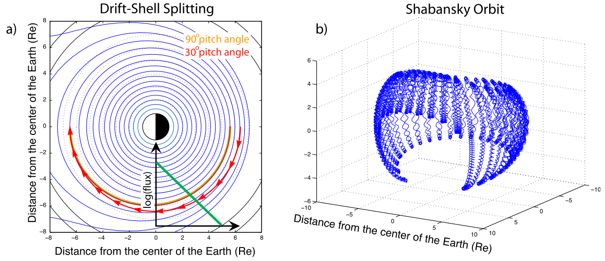
- 漂移壳层分裂
不同俯仰角的粒子遵循不同漂移路径，因此来自不同空间位置的粒子可聚集在一起形成不稳定分布。在对称偶极磁场中，所有粒子都以相同的（初始）赤道距离绕地球漂移；而在压缩磁场中，俯仰角接近 \(90^\circ\) 的粒子沿磁场强度不变的线运动（守恒磁矩），俯仰角较小的粒子则沿更接近圆形的轨道运动。这称为_漂移壳层分裂_，如 图 23.13 a 所示。
图 23.13 a 显示了俯仰角分别为 \(30^\circ\) 和 \(90^\circ\) 的粒子从磁层夜侧漂向日侧时的示例路径。两种粒子的漂移路径在日侧下太阳点磁层相交，而它们轨迹的初始起点位于夜侧磁层的两个不同位置：\(30^\circ\) 俯仰角粒子离地球较远，\(90^\circ\) 俯仰角粒子离地球较近。如果粒子通量随距地径向距离下降，如 图 23.13 a 所示，那么相比于俯仰角较小的粒子，在离地球较近处漂移的 \(90^\circ\) 俯仰角粒子将具有更大通量。这导致垂直温度相对于平行温度增强，使分布具有温度各向异性（\(T_\perp > T_\parallel\)），因而可能对 EMIC 波不稳定。对于较高 L 壳层的粒子和更强的压缩，漂移轨迹分裂更明显。因此，在内磁层中，该效应可能只在太阳风动压大幅增加的时段重要。
- Shabansky 轨道
受压缩日侧磁层的外 L 壳层可能具有两个离赤道的磁场强度极小值，这些极小值在强压缩时更明显，可视为重构后的日侧磁层磁场与压缩有关的特征。在这样的磁场拓扑中，俯仰角为 \(90^\circ\) 的粒子继续漂移穿过赤道，但俯仰角较小的粒子可以在高纬度镜像反射而不穿过赤道，形成所谓的“Shabansky”轨道 [Shabansky, 1971]。当粒子到达日侧磁层顶附近的 \(\partial B/\partial s < 0\) 区域时，其中 \(S\) 是沿磁场的距离，它们离开赤道并反复弹跳，被俘获在中纬度。图 23.13 b 显示了一个质子从夜侧漂向日侧磁层的完整轨迹，说明了这一点。这些所谓的 Shabansky 区域可在两个不同位置形成增强的温度各向异性：一是在缺少较小俯仰角粒子的赤道平面；二是在受俘获的离赤道区域，那里粒子的俯仰角发生向较大俯仰角的净偏移。（？？？）因此，离子垂直温度相对于平行温度升高，产生的温度各向异性可能引起 EMIC 波增长，尤其是在离赤道区域。与漂移壳层分裂类似，当磁层被太阳风强烈压缩时，支持 Shabansky 轨道的区域可能进一步向内移动，到达地球同步轨道以内，成为内磁层日侧温度各向异性的重要来源。
23.5 弓激波
弓激波是超声速、超阿尔芬速太阳风与天体磁层相互作用产生的激波（章节 22）。
23.5.1 前激波区
“前震”（foreshock）一词借自地球物理学，原指发生在较大地震事件（“主震”）之前、在时间和空间上与其相关的地震。在空间物理中，_前激波区_是弓激波上游与弓激波磁连接的区域，既包含太阳风等离子体，也包含从弓激波向上游回流的带电粒子。它通常与准平行激波相关，因为如果激波法向与 \(\mathbf{B}\) 对齐，带电粒子更容易沿激波法向自由运动。如果粒子相对于环境等离子体的速度足够快，无库仑碰撞的等离子体激波无法耗散全部入射等离子体；其中一部分必须“返回”。前激波区等离子体与入射等离子体之间的对向流非常不稳定，因而激发多种波。
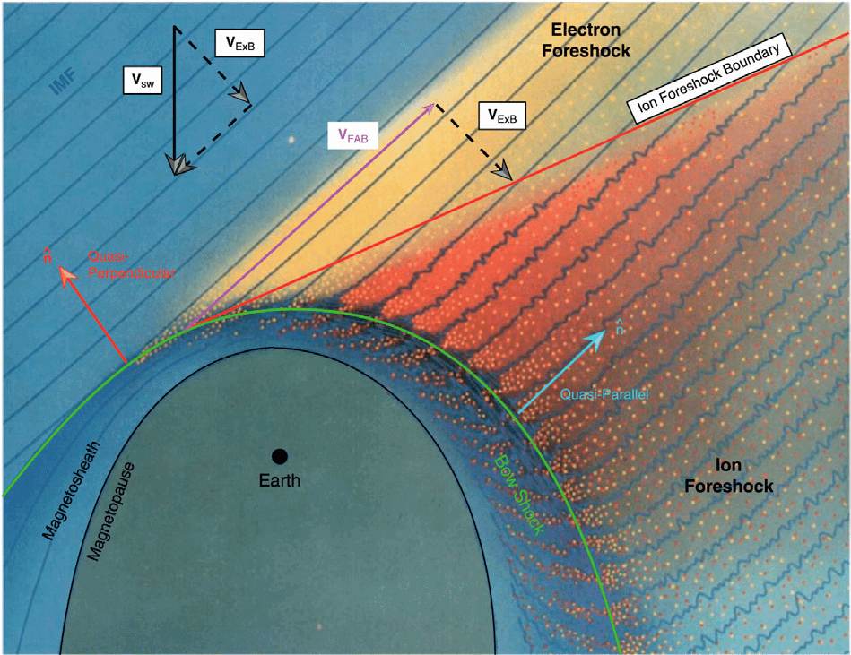
图 23.14 展示了地球前激波区的基本几何。倾斜的直线是嵌在太阳风中的磁场，太阳风在图中向下流动并遇到弯曲的弓激波（绿色曲线）。磁场与激波法向之间的夹角记为 \(\theta_\mathrm{Bn}\)。弓激波中 \(\theta_\mathrm{Bn} > 45^\circ\) 的部分（即图中地球左侧区域）称为“准垂直激波”，右侧 \(\theta_\mathrm{Bn} < 45^\circ\) 的区域是“准平行激波”，它一直延伸至 \(\theta_\mathrm{Bn} \sim 0^\circ\) 的“平行激波”。在 \(\theta_\mathrm{Bn} \sim 90^\circ\) 附近的激波处，一些回旋半径很小的入射太阳风电子被反射并向上游传播，形成称为“电子前激波区”的区域。一些在 \(\theta_\mathrm{Bn} \sim 90^\circ\) 附近撞击弓激波的太阳风离子也被反射，但由于回旋半径较大，很快回旋进入下游。在 \(\theta_\mathrm{Bn}\) 稍小但仍属于准垂直弓激波的位置，一部分太阳风离子同样被反射，沿磁场返回上游，同时随太阳风对流（图中的 \(\mathbf{V}_{E\times B}\)），形成离子前激波区的准垂直部分。在 图 23.14 所示离子前激波区边界更右侧，来自更小 \(\theta_\mathrm{Bn}\) 处激波（例如激波的准平行部分）的离子也向上游传播（图中的点），产生振幅更大的磁场波（蓝色波浪线），形成离子前激波区的准平行部分。这些回流离子可能来自太阳风并在激波处反射，也可能从磁鞘中泄漏出来。这一过程一直延伸到前激波区深处、\(\theta_\mathrm{Bn} \sim 0^\circ\) 的位置，那里激波法向基本平行于太阳风磁场。
离子前激波区的主导波模由_离子－离子束右旋不稳定性_产生，在地球前激波区的典型周期约为 30 秒。然而，其确切周期随太阳风条件，尤其是 IMF 强度而显著变化，在 10 至 80 秒之间。一种容易理解的方法是记住回旋频率 \(\omega_c=qB/m\)：束流不稳定性与回旋共振相关，而回旋频率直接与 \(B\) 相关。其波长量级为 \(1\,\text{R}_\text{E}\)，在航天器参考系中是左旋偏振。然而，其本征偏振是右旋的，表明它是快模。偏振反转是因为波试图向太阳传播，却实际上被速度更快的太阳风流带向地球。观测到的磁场强度与等离子体密度涨落正相关也与快模一致。
离子－离子右旋共振不稳定性由沿磁场从弓激波回流的冷而快的离子束驱动，它们通常产生于前激波区的准垂直部分。不稳定性初始增长期间，激发的电磁波具有接近束流速度的群速度，因此场能量与束流一同传播。波对束流产生俯仰角散射，减少自由能。
在前激波区更深处、连接弓激波近平行部分的磁力线上，也发现性质略有不同的电磁离子束不稳定性。这里的离子束较慢且较热，不太可能由激波反射产生，更可能源于冷束离子的加热和散射、与平行激波非定常性质有关的过程，或从磁鞘泄漏至前激波区的离子。其他类型的离子束不稳定性也出现在空间其他地方，例如磁尾慢模激波上游的等离子体片边界层以及彗星附近。
通过 ISEE、Cluster 和 MMS 航天任务，我们发现两类主要回流离子群，称为_反射离子_和_弥散离子_。反射离子的能谱具有尖锐峰值，沿行星际磁场从弓激波流出的流束相对准直，数密度约为太阳风的 \(\sim 1.5\%\)。相比之下，弥散离子的能谱平坦得多、角分布较宽，密度较低，约为太阳风的 \(\sim 0.7\%\)。这两类粒子群出现在前激波区的不同区域：反射离子位于准垂直部分，弥散离子位于更接近平行的部分，表明其起源和加速机制不同。反射离子与弥散离子群之间是_中间型_离子，它们在速度空间中呈新月形，对应于回旋相位聚束离子以及生成的波造成的俯仰角散射。反射离子之所以如此命名，是因为观测到离子回流束沿由行星际磁场和对流速度（\(\mathbf{V}_{E\times B}\)）决定的方向向上游传播，与弓激波处镜面反射的简单模型一致。
ISEE 观测还表明，与反射束流离子同时出现的波通常较弱，而与弥散离子同时出现的波常具有大振幅且可压缩。也观测到斜向传播的波，它们常呈变陡的波形，称为_小激波_。此外，在前激波区更深处还产生与弥散离子相关的阿尔芬波。前激波区内低频波开始出现的位置称为 ULF 前激波区边界，位于离子前激波区边界附近。前激波区深处、靠近准平行弓激波的另一种波称为_短尺度大振幅磁结构_（SLAMS）。
磁化等离子体中束流不稳定性的线性理论由 Peter Gary 建立。他对由多种自由能源激发的静电波和电磁波的完整色散关系进行了数值求解，例如电子束或离子束、背景或束流粒子种类的温度各向异性等。7 在 (Gary 等 1981年) 中，他展示了弱束流（密度约为 1%）最初如何产生低水平的波，其增长时间 > 25 s。由于波增长率很小，离子束在波增长至大振幅之前从弓激波向上游传播很长距离。但在向上游传播的过程中，束流离子和波被对流带入前激波区的准平行部分深处，并在那里减速。束流离子受到波的俯仰角散射而损失平行动量，产生中间型速度分布（肾形）。束流和波损失能量及动量使太阳风偏转和减速，与 Bame 等 (1980年) 的观测一致。由于斜向波8的可压缩性（即由线性理论计算的密度涨落）显著大于平行传播的波，斜向波可以增长并产生与观测一致的密度涨落。
在 Gary 等 (1984年) 中，比较了四种线性电磁离子不稳定性（小节 22.6.1）。线性色散关系的数值解表明，对于平行传播，除非束流速度或束流密度足够大，否则右旋共振不稳定性的阈值低于非共振不稳定性。对于热离子束，也会激发左旋共振不稳定性；如果束流中存在很大的温度各向异性（\(T_{b,\perp} \gg T_{b,\parallel}\)），还可能出现左旋离子回旋不稳定性。因此，决定被驱动不稳定性的因素为
- 束流密度 \(n_b\)
- 束流速度 \(V_b\)（相对于 \(V_A\)）
- 束流温度 \(T_b\)
- 束流压力各向异性
在 Gary 等 (1986年) 中，使用由高能冷离子束驱动的右旋共振及非共振不稳定性的线性理论，计算束流离子的涨落速度相对于涨落磁场的相位角，以确定束流离子的回旋相位聚束是否可观测。ISEE 在前激波区观测到了明显的回旋相位聚束离子。Peter 的线性计算表明，对于最不稳定波数，非共振模式的相位角为 \(\sim 0^\circ\)，而共振模式约为 \(\sim 90^\circ\)。观测与模拟均支持右旋共振不稳定性产生可观测的离子束回旋相位聚束。
尽管取得了这些成果，仍有一个主要问题：观测到的 ULF 波主要斜向于磁场传播，这与线性理论相反；线性理论认为平行模式的增长率最大，因此最终会成为主导模式。Cluster 的测量（Eastwood 等 (2005年)）给出的平均角度为 \(21^\circ\)。Strumik 等 (2015年) 后来提出了更有趣的解释。他们在前激波区模拟中假设太阳风基本沿径向传播。他们发现，虽然平行不稳定模式占主导，也会产生斜向波；对相空间密度恰当地求平均时，“平均”传播方向约为 \(\sim 20^\circ\)，与 Eastwood 等 (2005年) 一致。9
23.5.2 波的透射
快波穿过弓激波进入下游的透射引出了一个有趣问题。图 23.15 汇总了可能的机制。(Turc 等 2022年) 认为，向地传播的磁声扰动随后可传播到磁层顶并扰动磁层顶，而激波重构和模式转换只起较小作用。

正如等离子体物理中常见的情况，伴随离子前激波区，还存在尺度小得多的电子前激波区。
离子／电子前激波区的形成分别要求离子和电子存在对向流。由于电子／离子双流体方程中每个粒子种类只有一个速度，在多矩模型中无法触发这一不稳定性。理论上可以有一个极度简化的情况，用两种离子流体表示离子对向流，但这方面研究很少。最低要求可能是回旋动理学。
23.6 磁鞘
23.6.1 喷流
磁鞘喷流是动压增强的区域。可以将喷流想象成磁鞘中落到磁层顶上的雨滴。它们广泛与准平行磁鞘相关，表明其起源与前激波区和弓激波之间的相互作用有关。
磁鞘喷流的形成可能与外部和内部驱动都有关系。
- 外部
- 太阳风压力脉冲
- 旋转间断
- 内部
- 前激波区湍流产生的局部涟漪可能导致等离子体折射并汇聚。
- 短尺度大振幅磁结构（SLAMS），即短时间尺度但大空间尺度上变陡的前激波区涨落。
23.7 磁层

23.7.1 磁层顶
磁层顶是磁层与周围等离子体之间的突变边界。 行星际介质中等离子体粒子的碰撞频率很低，电导率高到可以近似为无限导体。真空中的磁场不能穿透具有无限电导率的体积。Chapman 和 Bartels（1940）通过假设在行星偶极子的日侧放置一块无限电导率的板说明了这一概念，如 图 23.17 所示。 日侧磁力线发生弯曲。在低纬度，磁力线被向内推；在高纬度，磁力线被向后推并越过极区。由行星磁场主导的区域（即磁层）与行星际介质中等离子体之间的边界就是磁层顶。由于太阳风持续向外流动，行星上方、下方及两侧的磁层顶被向后扫入地磁尾，如艺术示意图所示。将被向内推的行星磁力线与被向后推过两极的磁力线分开的区域（示意图中的粉色区域）是弱磁场区域，即日侧极尖区。太阳风粒子可以通过极尖区进入行星磁层。由于太阳风始终存在，而不只在太阳耀斑期间存在，磁层顶是任何具有磁场的行星附近空间的永久特征。

如果假设磁层顶只是位于真空磁场与嵌有弱磁场的等离子体之间的边界，那么磁层顶将由_穿入磁场区域一个回旋半径的电子和离子_定义。由于电子和离子的回旋方向相反，电流沿边界流动。
23.7.1.1 顶点距离的估计
磁层顶位置由内部磁场和外部太阳风之间的压力平衡决定。作为磁层顶顶点距离的一级估计，我们忽略磁层内部热压力，令太阳风的冲击动压等于地球磁场的磁压：10 \[ \left( \rho v^2 \right)_\textrm{sw} \approx \left( \frac{4B(r)^2}{2\mu_0} \right)_\textrm{m} \] 其中 \(\rho\) 和 \(v\) 是太阳风的密度和速度，\(B(r)\) 是以 SI 单位表示的行星磁场强度。
由于偶极磁场强度随距离按 \(1/r^3\) 变化，可写为 \(B(r)=B_0/r^3\)，其中 \(B_0\) 是行星磁矩，以 \([\textrm{T}\cdot \textrm{m}^3]\) 表示。 \[ \begin{aligned} \rho v^2 \approx \frac{2B_0^2}{r^6 \mu_0} \\ r \approx \left( \frac{2B_0^2}{\mu_0 \rho v^2} \right)^{1/6} \end{aligned} \]
地球到下太阳点磁层顶的距离由于太阳活动而随时间变化，但典型距离在 \(6-15 R_{\oplus}\) 范围内。使用实时太阳风数据的经验模型（例如 (Shue 等 1997年)）可提供磁层顶位置的实时估计。
表 23.2 汇总了太阳系各行星磁层的基本大小。金星和火星没有行星磁场，也没有磁层顶。太阳风与行星大气相互作用，在行星后方形成空腔。对于地球的月球及其他没有磁场或大气的天体，其表面与太阳风相互作用，在天体后方形成空腔，通常称为尾迹。 所有行星都可能表现出电感效应，具体取决于电离层或类似电离层的球层的电导率。IMF 与导体相互作用，在导体表面感应电流，产生阻止外部磁场穿入导体的感应磁场。这在火星是主要贡献，在水星和木卫三是次要贡献，而在其他大型行星上某种程度上可以忽略。
23.7.2 质量、动量和能量的输运
磁层顶边界处的质量、动量和能量输运驱动了很大一部分磁层动力学，因此是磁层物理的重要课题。进入磁层的太阳风等离子体和能量的数量受行星际磁场（IMF）方向调节：IMF 南向期间，主要过程被认为是磁重联（章节 14）；而 IMF 北向期间，过程包括极尖区重联、Kelvin-Helmholtz 涡旋中的等离子体混合／重联，以及磁层顶边界处大振幅 ULF 波中的波粒扩散过程（?sec-klr）。
磁层顶边界较常见的频谱特征之一是波偏振从压缩波（例如准平行弓激波的前激波区波）向横向（阿尔芬）波的急剧转变，从磁鞘一直延伸到边界层。压缩模穿过磁层顶转换为阿尔芬模，可有效地跨边界输运和加热等离子体。多点测量已证实宽带波的色散与动理学阿尔芬波（KAW）一致 [Chaston+,2007, 2008]。KAW 还为观测到的 IMF 北向期间等离子体进入的晨昏不对称提供了自然解释，因为它们源于压缩型前激波区波的模式转换，而对于典型帕克螺旋构型，这些波通常充满晨侧翼。
根据线性理论，当 MHD 快模压缩波穿过非均匀等离子体传播时，它在局部阿尔芬共振 \(\omega=k_\parallel V_A\) 处与剪切阿尔芬波耦合，其中 \(\omega\) 是波频率。当快波传播进入阿尔芬速度急剧增加的区域时，这一过程可能非常有效，例如磁层顶边界处磁场增强而密度降低。通常穿过磁层顶时阿尔芬速度增加 10 倍，使整整一个数量级频率范围内的波功率可以被捕获并局域在边界层中，导致大量粒子输运。在 MHD 描述中，耦合发生于频率与连续谱匹配之处，波变为奇异，对应于压缩波能量的堆积。
奇异行为发生在阿尔芬共振 \(\omega^2=k_\parallel^2 v_A^2\) 或声共振处，此时压缩波与仅沿磁场传播的阿尔芬波或声波耦合。在较高频率情况下，由于有限离子拉莫尔半径效应，阿尔芬共振条件被修正（式 17.27）；通过在 式 17.26 中加入电子惯性或离子拉莫尔半径修正等非 MHD 效应，可以消除阿尔芬共振奇点。可以证明，动理学效应自然地从双流体／动理学理论中产生，包括与 KAW 的耦合。更多方程见 小节 17.4。
在共振点，快波解与 KAW 解耦合，预计将产生横向偏振的阿尔芬波并从模式转换位置向外辐射。由于这些波的群速度远小于压缩波，横向涨落的振幅通常远大于压缩驱动波的振幅，这与磁层顶观测一致。
如 章节 17 所讨论，当方位角波数 \(m\) 或盒模型中的 \(k_y\) 为零时，应当没有模式耦合。然而，如果考虑_有限频率效应_（小节 17.4），情况并非如此；这一点最早由 (1979年) 指出。
23.7.3 Dungey 循环
Dungey（1961）首次提出由日侧磁层磁重联驱动的磁层对流循环。地球日侧连接的磁场被太阳风输运到夜侧，在那里于地球后方形成长尾。这种向夜侧的磁通转移迫使磁层构型发生系统变化，最终导致夜侧磁重联，通过不同响应模式沿磁层两翼将磁通返回日侧。
23.7.4 Vasyliunas 循环
这是木星对应于地球磁层 Dungey 循环的过程，其中离心力对等离子体对流的影响起关键作用。
23.7.5 低纬边界层
地球的_低纬边界层_（LLBL）是在低纬磁层顶磁层一侧、磁鞘与磁层等离子体混合的区域。有人提出，高纬度磁重联、Kelvin-Helmholtz 不稳定性和动理学阿尔芬波这三个过程对其形成起主要作用，且原位卫星都已在 LLBL 内观测到这些过程。近期研究进一步提出，这些过程的耦合有效提高了形成速率。
两个缩写都常用。当抛射在太阳日冕中被观测到时称为 CME，在更远的行星际空间中则称为 ICME。↩︎
这是“反常”一词的使用值得商榷的众多例子之一。波粒相互作用或超出流体描述的过程并没有什么反常之处。↩︎
文献中有时将压缩模称为_压缩极向模_，而极向模同时指压缩极向模和阿尔芬型极向模。↩︎
等离子体耗尽层（PDL）是磁层顶向日侧的一层，与对应的上游磁鞘相比，它具有更低的等离子体密度和更强的磁场。↩︎
在动理学尺度上，这并不成立！↩︎
一个重要假设是所有粒子种类都服从麦克斯韦分布。↩︎
我认为这里的平行波指阿尔芬波，而斜向波指快模波。↩︎
所以我的感觉是，他们试图论证 \(20^\circ\) 的偏离纯粹是统计偏差，而不是物理效应。↩︎
因子 4 的原因是，对于平面磁层顶，磁层顶紧内侧的磁场强度为偶极场值的两倍。↩︎
以地球磁矩归一化。↩︎
以行星半径归一化。↩︎
以行星半径为单位。磁层变化主要响应太阳风动压和行星际磁场。↩︎